Chap13
Adding buffers to our networks results in significantly more efficient flow control.
为网络添加缓冲区可显著提升流控效率。
| CHAPTER 13 | |
| Buffered Flow Control |
This is because a buffer decouples the allocation of adjacent channels. Without a buffer, the two channels must be allocated to a packet (or flit) during consecutive cycles, or the packet must be dropped or misrouted. There is nowhere else for the packet to go. Adding a buffer gives us a place to store the packet (or flit) while waiting for the second channel, allowing the allocation of the second channel to be delayed without complications.
这是因为缓冲器解耦了相邻通道的分配。如果没有缓冲器，两个通道必须在连续的周期内分配给一个数据包（或微片），否则数据包就必须被丢弃或错误路由。数据包无处可去。添加缓冲器后，就为数据包（或微片）提供了等待第二个通道时的存储位置，从而可以延迟分配第二个通道而不会引起复杂问题。
Once we add buffers to an interconnection network, our flow control mechanism must allocate buffers as well as channel bandwidth. Moreover, we have a choice as to the granularity at which we allocate each of these resources. As depicted in Figure 13.1, we can allocate either buffers or channel bandwidth in units of flits or packets. As shown in the figure, most flow control mechanisms allocate both resources at the same granularity. If we allocate both channel bandwidth and buffers in units of packets, we have packet-buffer flow control, either store-and-forward flow control or cut-through flow control, which will be described further in Section 13.1.
一旦在互连网络中引入缓冲区，流控机制就需要同时分配缓冲区和通道带宽资源。此外，我们还需选择这两种资源的分配粒度。如图13.1所示，我们可以按微片（flit）或数据包（packet）为单位分配缓冲区或通道带宽。从图中可见，大多数流控机制会以相同的粒度同时分配两类资源。若通道带宽与缓冲区均以数据包为单位进行分配，便构成了包级缓冲流控——具体分为存储转发流控与直通流控两种形式，将在第13.1节中详细阐述。
If we allocate both bandwidth and buffers in units of flits, we have flit-buffer flow control, which we will describe in Section 13.2. Allocating storage in units of flits rather than packets has three major advantages. It reduces the storage required for correct operation of a router, it provides stiffer backpressure from a point of congestion to the source, and it enables more efficient use of storage.
如果我们以微片为单位来分配带宽和缓冲，就形成了微片缓冲流控，我们将在第13.2节中对此进行描述。以微片而非数据包为单位分配存储有三个主要优点。它减少了路由器正确运行所需的存储空间，它提供了从拥塞点到源头更强的背压，并且使得存储的利用更高效。
The off-diagonal entries in Figure 13.1 are not commonly used. Consider first allocating channels to packets but buffers to flits. This will not work. Sufficient buffering to hold the entire packet must be allocated before transmitting a packet across a channel. The case where we allocate buffers to packets and channel bandwidth to flits is possible, but not common. Exercise 13.1explores this type of flow control in more detail.
图13.1中非对角线上的条目并不常用。首先考虑将信道分配给分组，而将缓冲区分配给微片。这种做法不可行。在通过信道传输分组之前，必须分配足以容纳整个分组的缓冲空间。将缓冲区分配给分组、而将信道带宽分配给微片的情形虽有可能，但并不常见。练习13.1更详细地探讨了这类流控方式。
| Channel allocated in units of | |||
| Packets | Flits | ||
| in units of Buffer allocated | Packets | Packet-buffer flow control | See Exercise13.1 |
| Flits | Not possible | Flit-buffer flow control | |
Figure 13.1 Buffered flow control methods can be classified based on their granularity of channel bandwidth allocation and of buffer allocation.
图 13.1 带缓冲的流控方法可根据其通道带宽分配与缓冲区分配的粒度加以分类。
This chapter explores buffered flow control in detail. We start by describing packet-buffer flow control (Section 13.1) and flit-buffer flow control (Section 13.2). Next, we present methods for managing buffers and signaling backpressure in Section 13.3. Finally, we present flit-reservation flow control (Section 13.4), which separates the control and data portions of packets to improve allocation efficiency.
本章详细探讨缓冲流控制。我们首先描述分组缓冲流控制（第13.1节）和微片缓冲流控制（第13.2节）。接着，我们在第13.3节介绍管理缓冲区与发送反压信号的方法。最后，我们介绍微片预留流控制（第13.4节），它将分组的控制部分与数据部分分离，以提高分配效率。
13.1 Packet-Buffer Flow Control
We can allocate our channel bandwidth much more efficiently if we add buffers to our routing nodes. Storing a flit (or a packet) in a buffer allows us to decouple allocation of the input channel to a flit from the allocation of the output channel to a flit. For example, a flit can be transferred over the input channel on cycle \(i\) and stored in a buffer for a number of cycles \(j\) until the output channel is successfully allocated on cycle \(i + j\) . Without a buffer, the flit arriving on cycle \(i\) would have to be transmitted on cycle \(i + 1\) , misrouted, or dropped. Adding a buffer prevents the waste of the channel bandwidth caused by dropping or misrouting packets or the idle time inherent in circuit switching. As a result, we can approach 100% channel utilization with buffered flow control.
如果在路由节点中添加缓冲器，我们就能更高效地分配信道带宽。将微片（或数据包）存储在缓冲器中，可以将输入信道分配给微片与输出信道分配给微片解耦。例如，一个微片可以在周期 \(i\) 通过输入信道传输，并存储在缓冲器中经过 \(j\) 个周期，直到在周期 \(i + j\) 成功分配到输出信道。若无缓冲器，在周期 \(i\) 到达的微片就必须在周期 \(i + 1\) 被转发、错误路由或丢弃。添加缓冲器可以避免因丢弃或错误路由数据包而造成的信道带宽浪费，也能消除电路交换固有的空闲时间。因此，采用缓冲流控制，我们可以接近 100% 的信道利用率。
Buffers and channel bandwidth can be allocated to either flits or packets. We start by considering two flow control methods, store-and-forward and cut-through, that allocate both of these resources to packets. In Section 13.2, we see how allocating buffers and channel bandwidth to flits rather than packets results in more efficient buffer usage and can reduce contention latency.
缓冲区和通道带宽既可以分配给微片，也可以分配给数据包。我们首先考察两种流量控制方法——存储转发与直通交换，它们将这两种资源都分配给数据包。在第13.2节中，我们将看到将缓冲区和通道带宽分配给微片而非数据包，能够提高缓冲区利用效率并降低竞争延迟。
With store-and-forward flow control, each node along a route waits until a packet has been completely received (stored) and then forwards the packet to the next node. The packet must be allocated two resources before it can be forwarded: a packet-sized buffer on the far side of the channel and exclusive use of the channel. Once the entire packet has arrived at a node and these two resources are acquired, the packet is forwarded to the next node. While waiting to acquire resources, if they are not immediately available, no channels are being held idle and only a single packet buffer on the current node is occupied.
采用存储转发流控时，路径上的每个节点都会等待数据包被完整接收（存储）后，再将其转发至下一节点。数据包在转发前必须获得两项资源：信道远端的一个数据包大小的缓冲区，以及该信道的独占使用权。一旦整个数据包抵达节点并获取这两项资源，数据包就会被转发至下一个节点。在等待获取资源期间，若资源并非立即可用，则不会有任何信道被闲置占用，仅有当前节点的一个数据包缓冲区被占据。
A time-space diagram showing store-and-forward flow control is shown in Figure 13.2. The figure shows a 5-flit \({}^{1}\) packet being forwarded over a 4-hop route with no contention. At each step of the route the entire packet is forwarded over one channel before proceeding to the next channel.
图 13.2 展示了一张说明存储转发流控制的时空图。图中描绘了一个包含 5 个微片 \({}^{1}\) 的数据包在无障碍情况下经一条 4 跳路径进行转发的过程。在该路径的每一步中，整个数据包完整地通过一条信道后，才会继续传输到下一条信道。
The major drawback of store-and-forward flow control is its very high latency. Since the packet is completely received at one node before it can begin moving to the next node, serialization latency is experienced at each hop. Therefore, the overall latency of a packet is
存储转发流控的主要缺点是极高的延迟。由于数据包必须在一个节点完全接收后才能开始向下一个节点移动，因此每一跳都会经历串行化延迟。因此，数据包的总延迟是
\[ {T}_{0} = H\left( {{t}_{r} + \frac{L}{b}}\right) . \]
Cut-through flow control \({}^{2}\) overcomes the latency penalty of store-and-forward flow control by forwarding a packet as soon as the header is received and resources (buffer and channel) are acquired, without waiting for the entire packet to be received . As with store-and-forward flow control, cut-through flow control allocates both buffers and channel bandwidth in units of packets. It differs only in that transmission over each hop is started as soon as possible without waiting for the entire packet to be received.
直通式流量控制\({}^{2}\)通过在报头被接收且资源（缓冲区和通道）被获取时立即转发数据包，无需等待整个数据包接收完毕，克服了存储转发式流量控制的时延惩罚。与存储转发式流量控制一样，直通式流量控制以数据包为单位分配缓冲区和通道带宽。其不同之处仅在于每一跳的传输会尽快开始，无需等待整个数据包接收完毕。
Figure 13.3 shows a time-space diagram of cut-through flow control forwarding a 5-flit \({}^{3}\) packet over a 4-hop route without contention (Figure 13.3[a]) and with contention (Figure 13.3[b]). The figure shows how transmission over each hop is started as soon as the header is received as long as a buffer and a channel are available.
图13.3展示了一个直通流控转发一个5-flit \({}^{3}\) 包时的时空图，该包在无竞争（图13.3[a]）和有竞争（图13.3[b]）的情况下经过一条4跳路由。图中显示了只要收到了头部，并且有可用的缓冲区和通道，每一跳的传输就会立即开始。
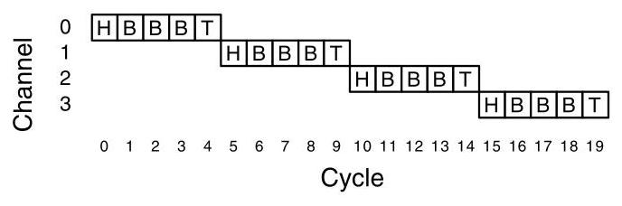
Figure 13.2 Time-space diagram showing store-and-forward flow control used to send a 5-flit packet over 4 channels. For this example, \({t}_{r} = 1\) cycle and \(D = 0\) . At each channel, a buffer is allocated to the packet and the entire packet is transmitted over the channel before proceeding to the next channel.
图13.2 时空图展示了采用存储转发流控通过4条信道发送一个5微片分组的情况。本例中，\({t}_{r} = 1\) 周期，\(D = 0\)。在每条信道上，均为该分组分配一个缓冲区，整个分组在该信道上全部传输完毕后，再进入下一条信道。
- With store-and-forward flow control, packets are not divided into flits. We show the division here for consistency with the presentation of other flow control methods.
- 在使用存储转发流控制时，数据包不会被分割成微片。这里我们展示分割只是为了与其他流控制方法的表述保持一致。
- This method is often called virtual cut-through. We shorten the name here to avoid confusion with virtual-channel flow control.
- 此方法通常称为虚拟直通。为免与虚拟通道流控混淆，此处我们将其名称缩短。
- As with store-and-forward, cut-through does not divide packets into flits. We show the division here for consistency.
- 与存储转发一样，直通交换不将数据包划分为微片。为保持一致性，这里仍展示了这种划分。
236
第2.3.6节考察了互连网络中的缓冲流控制。通过添加缓冲区，可以解耦相邻通道的分配，从而能在不丢弃或错误路由分组的情况下延迟分配，并允许接近100%的通道利用率。流控制根据资源分配的粒度（分组级 vs. 微片级）进行分类。
分组缓冲方法（存储转发和直通）以分组为单位分配缓冲区和通道。存储转发导致每跳延迟较高；直通在头部到达后立即转发，降低了延迟，但两者都存在大缓冲区利用效率低下的问题，并且因整个分组长期占用资源而增加了竞争延迟。
微片缓冲流控制以微片为单位分配资源。虫孔流控制为每条物理通道使用单个虚通道，节省了缓冲空间，但当分组在传输中途阻塞时，会造成通道空闲的风险。虚通道流控制将多个虚通道与一条物理通道关联，允许其他分组利用原本空闲的带宽，显著提升吞吐量和缓冲区效率。采用公平带宽仲裁时，竞争分组的微片被交错传输，但“赢者通吃”式仲裁可能降低平均延迟。
缓冲区管理和反压机制至关重要：基于信用的流控制为每个虚通道维护一个信用计数器，以指示下游可用的缓冲区空间，要求预留足够微片缓冲以覆盖信用的往返延迟。开/关流控制使用阈值和最少的上游信令来启动/停止传输。确认/否认流控制乐观地发送微片并在被拒时重传，但缓冲区和带宽效率低下，很少使用。
微片预留流控制将控制微片与数据微片分离，使用控制微片预留资源并通过预留表调度数据微片的发送时刻，从而隐藏流水线延迟并减少缓冲区周转时间，在实际路由器中提高了吞吐量。虚通道作为一种多用途工具，在提升性能、避免死锁和流量隔离方面发挥重要作用。
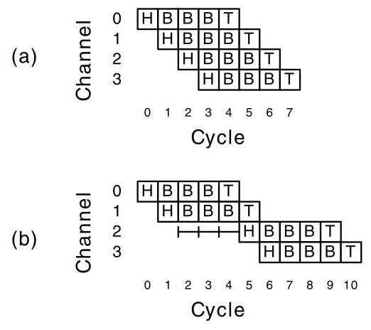
Figure 13.3 Time-space diagram showing cut-through flow control sending a 5-flit packet over 4 channels. For this example, \({t}_{r} = 1\) cycle and \(D = 0\) . (a) The packet proceeds without contention. An entire packet buffer is allocated to the packet at each hop; however, each flit of the packet is forwarded as soon as it is received, resulting in decreased latency. (b) The packet encounters contention for three cycles before it is able to allocate channel 2. As the buffer is large enough to hold the entire packet, transmission over channel 1 proceeds regardless of this contention.
图 13.3 时间-空间图，展示了直通式流量控制通过 4 个通道发送一个 5 flit 分组的过程。在该示例中，\({t}_{r} = 1\) 周期，\(D = 0\)。(a) 分组无竞争地进行传输。每一跳均会为分组分配一个完整的分组缓冲；然而，分组中的每个 flit 一经接收即被转发，从而降低了时延。(b) 分组在能够分配到通道 2 之前，遇到了长达三个周期的竞争。由于缓冲区足够大，能够容纳整个分组，因此无论是否存在该竞争，通道 1 上的传输都会照常进行。
In the first case, the resources are immediately available and the header is forwarded as soon as its received. In the second case, the packet must wait three cycles to acquire channel 2. During this time transmission continues over channel 1 and the data is buffered.
第一种情况下，资源立即可用，报头一收到就被转发。第二种情况下，数据包必须等待三个周期才能获取通道2。在此期间，传输在通道1上继续进行，数据被缓冲。
By transmitting packets as soon as possible, cut-through flow control reduces the latency from the product of the hop count and the serialization latency to the sum of these terms:
通过尽快传输数据包，直通式流量控制将延迟从跳数与串行化延迟的乘积降低为这些项的总和：
本章探讨了互连网络中的缓冲流控制，通过添加缓冲区解耦相邻通道的分配，能够在不丢弃或错误路由数据包的情况下延迟分配，从而实现接近100%的通道利用率。流控制根据资源分配的粒度（数据包与微片）进行分类。
数据包缓冲方法（存储转发和直通转发）以数据包为单位分配缓冲区和通道。存储转发导致每跳高延迟；直通转发通过头部到达即转发来降低延迟，但两者都存在大缓冲区利用低效和因整个数据包占用资源而增加的竞争延迟问题。
微片缓冲流控制以微片为单位分配资源。虫洞流控制每个物理通道仅使用一个虚拟通道，节省缓冲空间，但当数据包在传输中途阻塞时，空闲的通道会浪费带宽。虚拟通道流控制将一个物理通道关联多个虚拟通道，允许其他数据包利用原本空闲的带宽，显著提高吞吐量和缓冲区效率。在公平带宽仲裁下，来自竞争数据包的微片交错传输，但赢者全得的仲裁方式可降低平均延迟。
缓冲区管理和背压机制至关重要：基于信用的流控制为每个虚拟通道维持一个信用计数以指示下游空闲缓冲区，需要足够的微片缓冲区来覆盖信用往返延迟。开/关流控制使用阈值和少量上游信号来启动/停止传输。确认/否认流控制乐观发送微片并在遭拒时重传，但缓冲区和带宽效率低下，很少使用。
微片预留流控制将控制微片与数据微片分离，利用控制微片预留资源并通过预留表调度数据微片的出发。这隐藏了流水线延迟并缩短缓冲区周转时间，从而在实际路由器中提高吞吐量。虚拟通道作为一种多功能工具，在性能提升、死锁避免和流量隔离方面发挥重要作用。
At this point, cut-through flow control may seem like an ideal method. It gives very high channel utilization by using buffers to decouple channel allocation. It also achieves very low latency by forwarding packets as soon as possible. However, the cut-through method, or any other packet-based method, has two serious shortcomings. First, by allocating buffers in units of packets, it makes very inefficient use of buffer storage. As we shall see, we can make much more effective use of storage by allocating buffers in units of flits. This is particularly important when we need multiple, independent buffer sets to reduce blocking or provide deadlock avoidance. Second, by allocating channels in units of packets, contention latency is increased. For example, a high-priority packet colliding with a low-priority packet must wait for the entire low-priority packet to be transmitted before it can acquire the channel. In the next section, we will see how allocating resources in units of flits rather than packets results in more efficient buffer use (and hence higher throughput) and reduced contention latency.
此时，直通流量控制看似是一种理想的方法。它利用缓冲区解耦通道分配，从而实现了极高的通道利用率；同时，通过尽快转发数据包，它也实现了很低的延迟。然而，直通方法或任何其他基于数据包的方法都存在两个严重缺陷。首先，以数据包为单位分配缓冲区，导致缓冲区存储的使用效率极低。我们将看到，以微片为单位分配缓冲区可以更有效地利用存储空间。当需要多个独立的缓冲区集合来减少阻塞或实现死锁避免时，这一点尤为重要。其次，以数据包为单位分配通道会增加竞争延迟。例如，一个高优先级数据包与低优先级数据包发生碰撞时，必须等待整个低优先级数据包传输完成后才能获取通道。在下一节中，我们将看到以微片而非数据包为单位分配资源，如何实现更高效的缓冲区利用（进而提高吞吐量）并降低竞争延迟。
13.2 Flit-Buffer Flow Control
13.2.1 Wormhole Flow Control
Wormhole flow control \({}^{4}\) operates like cut-through, but with channel and buffers allocated to flits rather than packets. When the head flit of a packet arrives at a node, it must acquire three resources before it can be forwarded to the next node along a route: a virtual channel (channel state) for the packet, one flit buffer, and one flit of channel bandwidth. Body flits of a packet use the virtual channel acquired by the head flit and hence need only acquire a flit buffer and a flit of channel bandwidth to advance. The tail flit of a packet is handled like a body flit, but also releases the virtual channel as it passes.
虫洞流控制\({}^{4}\)的运行方式与直通式类似，但其信道和缓冲区是按微片而非数据包进行分配的。当数据包的首个微片抵达某个节点时，它必须获取三项资源，才能沿路由转发至下一节点：一个服务于该数据包的虚拟通道（即信道状态）、一个微片缓冲区，以及一个微片的信道带宽。数据包的体微片使用由首微片获取的虚拟通道，因此只需获取一个微片缓冲区和一个微片的信道带宽即可继续传输。数据包的尾微片按体微片的相同方式处理，但在通过时会释放所占用的虚拟通道。
A virtual channel holds the state needed to coordinate the handling of the flits of a packet over a channel. At a minimum, this state identifies the output channel of the current node for the next hop of the route and the state of the virtual channel (idle, waiting for resources, or active). The virtual channel may also include pointers to the flits of the packet that are buffered on the current node and the number of flit buffers available on the next node.
虚拟通道保存了在一条通道上协调数据包微片处理所需的状态。至少，该状态会指明当前节点用于路由下一跳的输出通道以及虚拟通道的状态（空闲、等待资源或活跃）。虚拟通道还可能包括指向当前节点所缓冲数据包微片的指针，以及下一节点上可用的微片缓冲区数量。
An example of a 4-flit packet being transported through a node using wormhole flow control is shown in Figure 13.4. Figure 13.4(a-g) illustrates the forwarding process cycle by cycle, and Figure 13.4(h) shows a time-space diagram summarizing the entire process. The input virtual channel is originally in the idle state (I) when the head flit arrives (a). The upper output channel is busy, allocated to the lower input (L), so the input virtual channel enters the waiting state (W) and the head flit is buffered while the first body flit arrives (b). The packet waits two more cycles for the output virtual channel (c). During this time the second body flit is blocked and cannot be forwarded across the input channel because no buffers are available to hold this flit. When the output channel becomes available, the virtual channel enters the active state (A), the header flit is forwarded and the second body flit is accepted. The remaining flits of the packet proceed over the channel in subsequent cycles (e, f, and g). As the tail flit of the packet is forwarded, it deallocates the input virtual channel, returning it to the idle state (g).
图13.4展示了一个使用虫洞流控的4微片数据包通过节点的示例。图13.4(a-g)逐周期展示了转发过程，图13.4(h)的时空图总结了整个过程。当头微片到达时，输入虚通道最初处于空闲状态（I）（a）。上方输出通道正忙，已分配给下方输入（L），因此输入虚通道进入等待状态（W），头微片被缓存，同时第一个体微片到达（b）。数据包再等待两个周期以获取输出虚通道（c）。在此期间，第二个体微片被阻塞，无法通过输入通道转发，因为没有可用缓冲区存放该微片。当输出通道变为可用时，虚通道进入活动状态（A），头微片被转发，第二个体微片被接收。数据包的剩余微片在后续周期中穿过通道（e、f和g）。当数据包的尾微片被转发时，它释放输入虚通道，使其返回空闲状态（g）。
Compared to cut-through flow control, wormhole flow control makes far more efficient use of buffer space, as only a small number of flit buffers are required per virtual channel. \({}^{5}\) In contrast, cut-through flow control requires several packets of buffer space, which is typically at least an order of magnitude more storage than wormhole flow control. This savings in buffer space, however, comes at the expense of some throughput, since wormhole flow control may block a channel mid-packet.
与直通流控相比，虫洞流控对缓冲区空间的利用效率要高得多，因为每个虚拟通道仅需少量微片缓冲区。\({}^{5}\) 相比之下，直通流控需要数个数据包大小的缓冲区空间，其存储量通常至少比虫洞流控大一个数量级。然而，这种缓冲区空间的节省是以牺牲部分吞吐量为代价的，因为虫洞流控可能在数据包传输中途阻塞通道。
- Historically, this method has been called "wormhole routing." However, it is a flow control method and has nothing to do with routing. Hence, we refer to this method as "wormhole flow control."
- 历史上，这种方法被称为“虫洞路由”。然而，它是一种流控制方法，与路由无关。因此，我们将这种方法称为“虫洞流控制”。
- Enough buffers should be provided to cover the round-trip latency and pipeline delay between the two nodes. This is discussed in more detail in Sections 13.3 and 16.3.
- 应提供足够的缓冲区来覆盖两个节点之间的往返延迟和流水线延迟。这一点将在第 13.3 节和第 16.3 节中详细讨论。
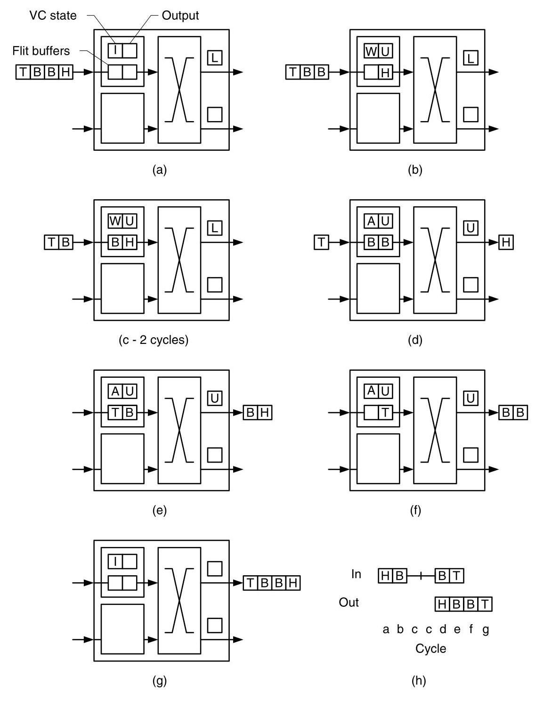
Figure 13.4 Wormhole flow control: (a-g) a 4-flit packet routing through a node from the upper input port to the upper output port, (h) a time-space diagram showing this process. In (a) the header arrives at the node, while the virtual channel is in the idle state (I) and the desired upper (U) output channel is busy - allocated to the lower (L) input. In (b) the header is buffered and the virtual channel is in the waiting state (W), while the first body flit arrives. In (c) the header and first body flit are buffered, while the virtual channel is still in the waiting state. In this state, which persists for two cycles, the input channel is blocked. The second body flit cannot be transmitted, since it cannot acquire a flit buffer. In (d) the output virtual channel becomes available and allocated to this packet. The state moves to active (A) and the head is transmitted to the next node. The body flits follow in (e) and (f). In (g) the tail flit is transmitted and frees the virtual channel, returning it to the idle state.
图13.4 虫孔流控制：（a–g）一个4微片的数据包从上方输入端口经由节点路由到上方输出端口的过程，（h）展示该过程的时间-空间图。在（a）中，头微片到达节点，此时虚拟通道处于空闲状态（I），而所需的上方（U）输出通道正忙——已分配给下方（L）输入。在（b）中，头微片被缓存，虚拟通道进入等待状态（W），同时第一个体微片到达。在（c）中，头微片和第一个体微片被缓存，虚拟通道仍处于等待状态。在此状态下，输入通道被阻塞，持续两个周期。第二个体微片无法获取微片缓存，因而不能传输。在（d）中，输出虚拟通道变为可用并分配给该数据包，状态转为活跃（A），头微片被传输至下一节点。体微片随后在（e）和（f）中相继传输。在（g）中，尾微片完成传输，释放虚拟通道，使其恢复空闲状态。
Blocking may occur with wormhole flow control because the channel is owned by a packet, but buffers are allocated on a flit-by-flit basis. When a flit cannot acquire a buffer, as occurs in Figure 13.4(c), the channel goes idle. Even if there is another packet that could potentially use the idle channel bandwidth, it cannot use it because the idled packet owns the single virtual channel associated with this link. Even though we are allocating channel bandwidth on a flit-by-flit basis, only the flits of one packet can use this bandwidth.
在虫孔流控制中，可能发生阻塞，因为通道归某个数据包所有，但缓冲器是以微片为单位分配的。当一个微片无法获取缓冲器时，如图13.4(c)所示，通道便进入空闲状态。即使有另一个数据包有可能利用空闲的通道带宽，它也无法使用，因为被阻塞的数据包拥有与此链路关联的单个虚通道。尽管我们是以微片为单位分配通道带宽，但只有一个数据包的微片能够使用这些带宽。
13.2.2 Virtual-Channel Flow Control
Virtual-channel flow control, which associates several virtual channels (channel state and flit buffers) with a single physical channel, overcomes the blocking problems of wormhole flow control by allowing other packets to use the channel bandwidth that would otherwise be left idle when a packet blocks. As in wormhole flow control, an arriving head flit must allocate a virtual channel, a downstream flit buffer, and channel bandwidth to advance. Subsequent body flits from the packet use the virtual channel allocated by the header and still must allocate a flit buffer and channel bandwidth. However, unlike wormhole flow control, these flits are not guaranteed access to channel bandwidth because other virtual channels may be competing to transmit flits of their packets across the same link.
虚通道流控将多个虚通道（通道状态与微片缓冲区）关联到单条物理通道上，从而克服了虫孔流控中的阻塞问题——当某个数据包被阻塞时，原本闲置的通道带宽可被其他数据包使用。与虫孔流控类似，到达的头微片必须分配虚通道、下游微片缓冲区及通道带宽才能继续前进；数据包中后续的主体微片则沿用头部所分配的虚通道，但仍需分配微片缓冲区和通道带宽。然而与虫孔流控不同的是，这些微片并不能保证获得通道带宽，因为其他虚通道可能正在竞争同一链路上传输各自数据包的微片。
Virtual channels allow packets to pass blocked packets, making use of otherwise idle channel bandwidth, as illustrated in Figure 13.5. The figure shows 3 nodes of a 2-D, unidirectional torus network in a state where a packet \(B\) has entered node 1 from the north, acquired channel \(p\) from node 1 to node 2 and blocked. A second packet \(A\) has entered node 1 from the west and needs to be routed east to node 3 . Figure 13.5(a) shows the situation using wormhole routing with just a single virtual channel per physical channel. In this case, packet \(A\) is blocked at node 1 because it is unable to acquire channel \(p\) . Physical channels \(p\) and \(q\) are both idle because packet \(B\) is blocked and not using bandwidth. However, packet \(A\) is unable to use these idle channels because it is unable to acquire the channel state held by \(B\) on node 2.
虚通道允许数据包绕过被阻塞的数据包，从而利用原本空闲的信道带宽，如图 13.5 所示。该图展示了一个二维单向环面网络中的 3 个节点，其状态为：数据包 \(B\) 从北方进入节点 1，获取了从节点 1 到节点 2 的信道 \(p\) 并发生阻塞。第二个数据包 \(A\) 从西方进入节点 1，需要向东路由至节点 3。图 13.5(a) 展示了使用虫洞路由且每个物理信道仅有一条虚通道的情况。在此情况下，数据包 \(A\) 在节点 1 被阻塞，因为它无法获取信道 \(p\)。物理信道 \(p\) 和 \(q\) 均处于空闲状态，因为数据包 \(B\) 被阻塞且未占用带宽。然而，数据包 \(A\) 无法使用这些空闲信道，原因在于它无法获取 \(B\) 在节点 2 上所持有的信道状态。
Figure 13.5(b) shows the same configuration with two virtual channels per physical channel. Each small square represents a complete virtual channel state: the channel state (idle, waiting, or active), the output virtual channel, and a flit buffer. In this case, packet \(A\) is able to acquire the second virtual channel on node 2 and thus proceed to node 3, making use of channels \(p\) and \(q\) that were left idle with just a single virtual channel per node.
图 13.5(b) 展示了同样的配置，但每个物理通道使用了两个虚拟通道。每个小方块代表一个完整的虚拟通道状态：通道状态（空闲、等待或活跃）、输出虚拟通道以及一个微片缓冲区。在此情况下，数据包 \(A\) 能够获取节点 2 上的第二个虚拟通道，从而继续前往节点 3，利用了当每个节点仅有一个虚拟通道时处于闲置状态的通道 \(p\) 和 \(q\)。
The situation illustrated in Figure 13.5 is analogous to a stopped car (packet \(B\) ) on a single-lane road waiting to make a left turn onto a congested side road (south exit of node 2). A second car (packet \(A\) ) is blocked behind the first car and unable to proceed even though the road ahead (channels \(p\) and \(q\) ) is clear. Adding a virtual channel is nearly analogous to adding a left turn lane to the road. With the left turn lane, the arriving car (packet \(A\) ) is able to pass the car waiting to turn (packet \(B\) ) and continue along the road. Also, just as adding a virtual channel does not add bandwidth to the physical channel, a left turn lane does not increase the width of the roads between intersections.
图13.5所示的情形可以类比为一辆在单车道道路上准备左转进入拥堵辅路（节点2的南向出口）而停下的汽车（数据包 \(B\)）。另一辆车（数据包 \(A\) ）被堵在第一辆车后方无法前进，尽管其前方的道路（信道 \(p\) 和 \(q\) ）是畅通的。增加一条虚拟信道，几乎等同于在这条道路上增设一条左转车道。有了左转车道，抵达的汽车（数据包 \(A\) ）便能够超过那辆等待转弯的车（数据包 \(B\) ），继续沿道路前行。同样地，正如增加虚拟信道并不会为物理信道增加带宽，左转车道也不会增加交叉路口之间道路的宽度。
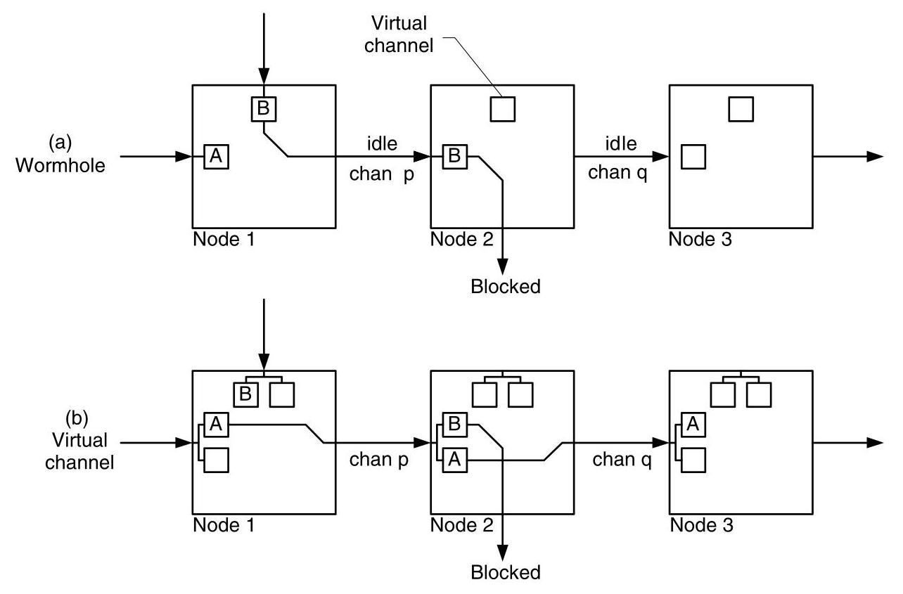
Figure 13.5 (a) With wormhole flow control when a packet, B, blocks while holding the sole virtual channel associated with channel p, channels p and q are idled even though packet A requires use of these idle channels. (b) With virtual channel flow control, packet A is able to proceed over channels \(p\) and \(q\) by using a second virtual channel associated with channel \(p\) on node 2.
图13.5 (a) 在虫洞流控中，当数据包B阻塞并持有与通道p关联的唯一虚拟通道时，即使数据包A需要使用这些空闲通道，通道p和q也会闲置。(b) 在虚拟通道流控中，数据包A能够通过使用节点2上与通道\(p\)关联的第二条虚拟通道，经由通道\(p\)和\(q\)继续传输。
As this simple example demonstrates, virtual-channel flow control decouples the allocation of channel state from channel bandwidth. This decoupling prevents a packet that acquires channel state and then blocks from holding channel bandwidth idle. This permits virtual-channel flow control to achieve substantially higher throughput than wormhole flow control. In fact, given the same total amount of buffer space, virtual-channel flow control also outperforms cut-through flow control because it is more efficient to allocate buffer space as multiple short virtual-channel flit buffers than as a single large cut-through packet buffer.
正如这个简单示例所展示的，虚拟通道流控将通道状态的分配与通道带宽解耦。这种解耦使得已经获得通道状态而后阻塞的数据包不至于令通道带宽闲置。这使得虚拟通道流控能够实现远高于虫孔流控的吞吐量。事实上，在总缓冲空间相同的情况下，虚拟通道流控的性能也优于直通流控，因为将缓冲空间分配为多个较短的虚拟通道微片缓冲器，要比分配为单个大的直通数据包缓冲器更高效。
An example in which packets on two virtual channels must share the bandwidth of a single physical channel is illustrated in Figure 13.6. Here, packets \(A\) and \(B\) arrive on inputs 1 and 2, respectively, and both acquire virtual channels associated with the same output physical channel. The flits of the two packets are interleaved on the output channel, each packet getting half of the flit cycles on the channel. Because the packets are arriving on the inputs at full rate and leaving at half rate, the flit buffers (each with a capacity of three flits) fill up, forcing the inputs to also throttle to half rate. The gaps in the packets on the input do not imply an idle physical channel, however, since another virtual channel can use these cycles.
图 13.6 展示了一个示例，其中两个虚通道上的数据包必须共享单个物理通道的带宽。这里，数据包 \(A\) 和 \(B\) 分别到达输入 1 和 2，并都获取了与同一输出物理通道关联的虚通道。两个数据包的微片在输出通道上交错传输，每个数据包获得该通道一半的微片周期。由于数据包以全速进入输入且以半速离开，微片缓冲区（每个容量为三个微片）被填满，迫使输入端也降低到半速。然而，输入端数据包的空隙并不意味着物理通道空闲，因为另一个虚通道可以使用这些周期。
When packets traveling on two virtual channels interleave flits on a single physical channel, as shown in Figure 13.7, this physical channel becomes a bottleneck that affects the bandwidth of these packets both upstream and downstream. On the downstream channels (south and east of node 2), the head flit propagates at full rate, allocating virtual channels, but body flits follow only every other cycle. The idle cycles are available for use by other packets. Similarly, once the flit buffers on node 1 fill, blocking limits each packet to transmit flits only every other cycle on the channels immediately upstream. This reduced bandwidth may cause the buffers on the upstream nodes to fill, propagating the blocking and bandwidth reduction further upstream. For long packets, this blocking can reach all the way back to the source node. As with the downstream case, the idle cycles on the upstream channels are available for use by other packets.
当两个虚拟通道上的数据包在一条物理通道上交错传输微片时，如图13.7所示，这条物理通道便成为瓶颈，影响这些数据包在上游和下游的带宽。在下游通道（节点2的南向和东向通道）上，头微片以全速传播，分配虚拟通道，但体微片每隔一个周期才能传输一次。这些空闲周期可供其他数据包使用。类似地，一旦节点1上的微片缓冲区填满，阻塞会迫使每个数据包在紧邻的上游通道上也只能每隔一个周期发送微片。这种带宽的降低可能导致上游节点的缓冲区也被填满，从而将阻塞和带宽降低进一步向上游传播。对于长数据包，这种阻塞可能一直回溯到源节点。与下游情况相同，上游通道上的空闲周期可供其他数据包使用。
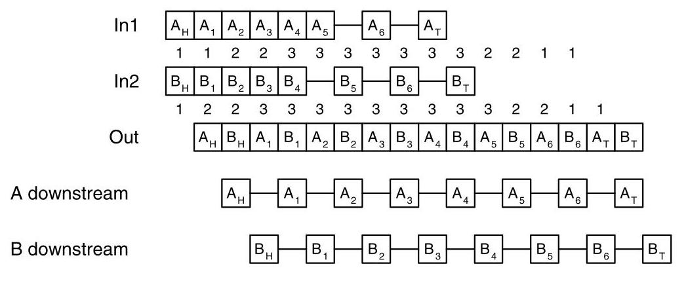
Figure 13.6 Two virtual channels interleave their flits on a single physical channel. Packet A arrives on input 1 at the same time that packet B arrives on input 2, and both request the same output. Both packets acquire virtual channels associated with the output channel but must compete for bandwidth on a flit-by-flit basis. With fair bandwidth allocation, the flits of the two packets are interleaved. The numbers under the arriving flits show the number of flits in the corresponding virtual channel's input buffer, which has a capacity of 3 flits. When the input buffer is full, arriving flits are blocked until room is made available by departing flits. On downstream links, the flits of each packets are available only every other cycle.
图13.6 两条虚拟通道在单个物理通道上交错它们的微片。包 A 在包 B 到达输入 2 的同一时刻到达输入 1，且两者请求同一个输出。两个包都获取了与该输出通道关联的虚拟通道，但必须以逐微片的方式竞争带宽。在公平带宽分配下，两个包的微片被交错传输。到达微片下方的数字表示相应虚拟通道输入缓冲中的微片数量，该缓冲容量为3个微片。当输入缓冲满时，到达的微片会被阻塞，直到离开的微片腾出空间。在下游链路上，每个包的微片仅每隔一个周期才可用。
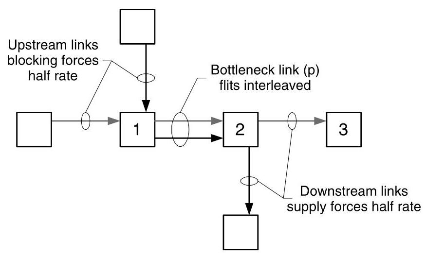
Figure 13.7 Sharing bandwidth of a bottleneck link by two virtual channels reduces both upstream and downstream bandwidth. Packet A (gray) and packet B (black) share bandwidth on bottleneck link \(p\) . Each packet gets 50% of the link bandwidth. The topology and routes are the same as in Figure 13.5. The supply of flits out of the bottleneck link limits these packets to use no more than 50% of the bandwidth of links downstream of the bottleneck. Also, once the flit buffers of the virtual channels on node 1 are filled, bandwidth upstream of the bottleneck channels is reduced to 50% by blocking. Packets traveling on other virtual channels may use the bandwidth left idle by the bottleneck.
图13.7 通过两条虚通道共享瓶颈链路的带宽，同时降低了上游和下游的可用带宽。数据包A（灰色）与数据包B（黑色）共享瓶颈链路 \(p\) 的带宽，每个数据包分得50%的链路带宽。拓扑与路由同图13.5。瓶颈链路输出的微片供给，限制了这些数据包对瓶颈下游链路带宽的使用，使其不得超过50%。同时，一旦节点1上虚通道的微片缓冲区被填满，瓶颈通道上游的带宽也会因阻塞而降至50%。经由其他虚通道传输的数据包可使用瓶颈所闲置的带宽。
Fair bandwidth arbitration, which interleaves the flits of competing packets over a channel (Figure 13.6) results in a higher average latency than winner-take-all bandwidth allocation, which allocates all of the bandwidth to one packet until it is finished or blocked before serving the other packets (Figure 13.8). With interleaving in our 2-packet example, both packets see a contention latency that effectively doubles their serialization latency. With winner-take-all bandwidth arbitration, however, first one packet gets all of the bandwidth and then the other packet gets all of the bandwidth. The result is that one packet has no contention latency, while the other packet sees a contention latency equal to the serialization latency of the first packet - the same as with interleaving. Of course, if packet \(A\) blocks before it has finished transmission, it would relinquish the channel and packet \(B\) would use the idle cycles. Making bandwidth arbitration unfair reduces the average latency of virtual-channel flow control with no throughput penalty.
公平带宽仲裁在通道上交织竞争数据包的微片（图13.6），其平均延迟高于赢者全拿的带宽分配方式——后者将所有带宽分配给一个数据包，直到其完成或阻塞后再服务其他数据包（图13.8）。在我们的两包示例中，采用交织时，两个数据包都会经历竞争延迟，这实际上使其串行化延迟翻倍。而采用赢者全拿带宽仲裁时，先是一个数据包获得全部带宽，然后另一个数据包获得全部带宽。结果是一个数据包没有竞争延迟，而另一个数据包的竞争延迟等于第一个数据包的串行化延迟——与交织情况相同。当然，如果数据包\(A\)在完成传输前阻塞，它会释放通道，数据包\(B\)将利用空闲周期。使带宽仲裁不公平可降低虚通道流控的平均延迟，且不会带来吞吐量损失。
The block diagram of Figure 13.9 illustrates the state that is replicated to implement virtual channels. \({}^{6}\) The figure shows a router with two input ports, two output ports, and two virtual channels per physical channel. Each input virtual channel includes a complete copy of all channel state including a status register (idle, waiting, or active), a register that indicates the output virtual channel allocated to the current packet, and a flit buffer. \({}^{7}\) For each output virtual channel, a single status register records whether the output virtual channel is assigned and, if assigned, the input virtual channel to which it is assigned. The figure shows a configuration in which input virtual channels 1 and 2, associated with the upper input port, are active, forwarding packets to output virtual channels 1 and 2, associated with the upper output port. Input virtual channel 3 is waiting to be allocated an output virtual channel, and input virtual channel 4 is idle.
图13.9的框图展示了为实现虚拟通道而复制的状态。\({}^{6}\) 该图显示了一个路由器，具有两个输入端口、两个输出端口，每条物理通道有两个虚拟通道。每个输入虚拟通道都包含一份完整的通道状态副本，包括一个状态寄存器（空闲、等待或活跃）、一个指示分配给当前数据包的输出虚拟通道的寄存器，以及一个微片缓冲区。\({}^{7}\) 对于每个输出虚拟通道，有一个单独的状态寄存器记录该输出虚拟通道是否已被分配，以及如果已分配，它被分配给了哪个输入虚拟通道。图中展示了一种配置，其中与上方输入端口关联的输入虚拟通道1和2处于活跃状态，正向与上方输出端口关联的输出虚拟通道1和2转发数据包。输入虚拟通道3正在等待被分配一个输出虚拟通道，而输入虚拟通道4处于空闲状态。
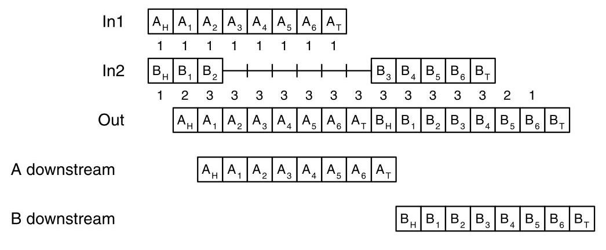
Figure 13.8 Packets \(A\) and \(B\) arrive at the same time on two virtual channels, sharing a single physical channel, just as in Figure 13.6. With winner-take-all arbitration, however, packet A transmits all of its flits before relinquishing the physical channel to packet \(B\) . As a result, the latency of packet \(A\) is reduced by 7 cycles without affecting the latency of packet \(B\) .
图13.8 数据包\(A\)和\(B\)同时到达两个虚拟通道，共享一条物理通道，与图13.6中的情况相同。然而，在赢者通吃的仲裁方式下，数据包A先发送完其所有微片，然后将物理通道交给数据包\(B\)。结果，数据包\(A\)的延迟减少了7个周期，而数据包\(B\)的延迟不受影响。
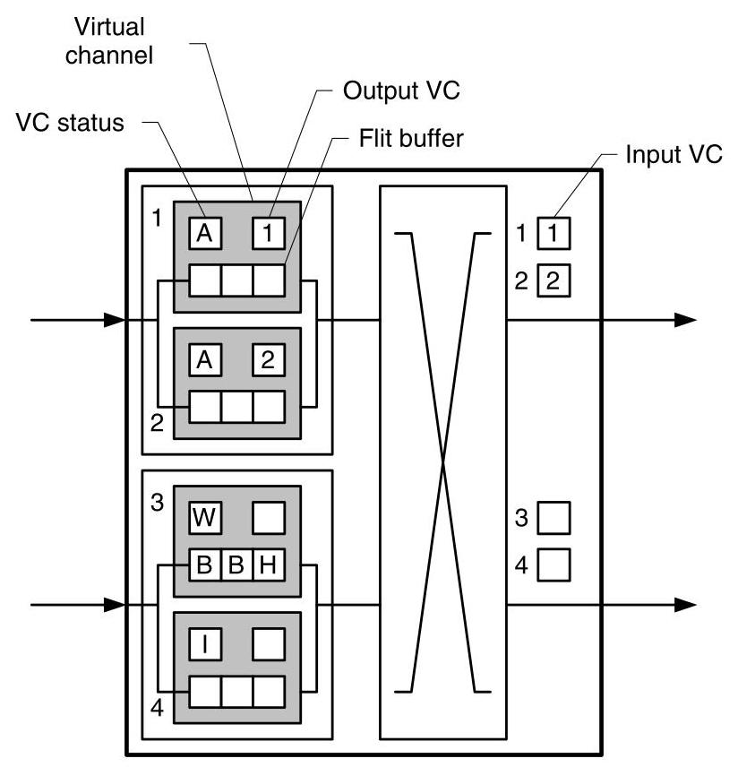
Figure 13.9 Block diagram of a virtual channel router showing the state associated with each virtual channel. Each input virtual channel includes the channel status, the output virtual channel allocated to the current packet, and a flit buffer. Each output virtual channel identifies the input virtual channel, if any, to which it is allocated. In this configuration, input virtual channel 1 is in the active state forwarding a packet to output virtual channel 1. Similarly, input virtual channel 2 is forwarding a packet to output virtual channel 2. Input virtual channel 3, associated with the lower physical channel, is waiting to be allocated an output virtual channel. Input virtual channel 4 is idle, waiting for the arrival of a packet.
图13.9 虚拟通道路由器的框图，显示了与每个虚拟通道相关的状态。每个输入虚拟通道包含通道状态、为当前分组分配的输出虚拟通道以及一个微片缓冲区。每个输出虚拟通道则标识出它所分配给的输入虚拟通道（若存在）。在此配置中，输入虚拟通道1处于活动状态，正将分组转发到输出虚拟通道1。类似地，输入虚拟通道2正将分组转发到输出虚拟通道2。与下方物理通道关联的输入虚拟通道3正在等待分配输出虚拟通道。输入虚拟通道4处于空闲状态，等待分组的到达。
- As we shall see in Section 17.1, the flit buffers of the virtual channels associated with a single input are often combined into a single storage array, and in some cases have storage dynamically allocated from the same pool.
- 正如我们将在第17.1节中看到的，与单个输入相关联的虚拟通道的微片缓冲通常被合并到一个单一的存储阵列中，并且在某些情况下，它们的存储空间是从同一个池中动态分配的。
Virtual-channel flow control organizes buffer storage in two dimensions (virtual channels and flits per virtual channel), giving us a degree of freedom in allocating buffers. Given a fixed number of flit buffers per router input, we can decide how to allocate these buffers across the two dimensions. Figure 13.10 illustrates the case where there are 16 flits of buffer storage per input. This storage can be organized as a single virtual channel with 16 flits of storage, two 8-flit virtual channels, four 4-flit virtual channels, eight 2-flit virtual channels, or sixteen 1-flit virtual channels. In general, there is little performance gained by making a virtual channel deeper than the number of flits needed to cover the round-trip credit latency so that full throughput can be achieved with a single virtual channel operating. (See Section 16.3.) Thus, when increasing the buffer storage available, it is usually better to add more virtual channels than to add flits to each virtual channel. \({}^{8}\)
虚拟通道流控将缓冲存储组织成两个维度（虚拟通道和每个虚拟通道的微片数），这为缓冲区的分配提供了一定的自由度。给定每个路由器输入端口固定数量的微片缓冲区，我们可以决定如何在这两个维度上分配这些缓冲区。图13.10展示了每个输入端口有16个微片缓冲存储的情况。该存储可以组织成单个具有16个微片容量的虚拟通道、两个各8个微片的虚拟通道、四个各4个微片的虚拟通道、八个各2个微片的虚拟通道或十六个各1个微片的虚拟通道。通常，将虚拟通道加深到超出覆盖往返信用延迟所需微片数几乎不会带来性能提升，因为单个虚拟通道工作即可实现全吞吐量（见第16.3节）。因此，当增加可用的缓冲存储时，通常增加更多的虚拟通道比增加每个虚拟通道的微片数更好。\({}^{8}\)
Virtual channels are the Swiss-Army™ Knife of interconnection networks. They are a utility tool that can be used to solve a wide variety of problems. As discussed above, they can improve network performance by allowing active packets to pass blocked packets. As we shall see in Chapter 14, they are widely used to avoid deadlock in interconnection networks. They can be applied to combat both deadlock in the network itself and deadlock due to dependencies in higher-level protocols. They can be used to provide multiple levels of priority or service in an interconnection network by separating different classes of traffic onto different virtual channels and allocating bandwidth preferentially to the higher-priority traffic classes. They can even be used to make a network non-interfering by segregating traffic with different destinations.
虚拟通道堪称互连网络中的“瑞士军刀”。它们是一种实用工具，可用于解决各种各样的问题。如上所述，它们通过让活跃的数据包绕过被阻塞的数据包，从而提升网络性能。正如我们将在第14章中看到的，它们被广泛用于避免互连网络中的死锁。它们既可以用来对抗网络本身的死锁，也可以用于解决因高层协议依赖关系而产生的死锁。通过将不同类型的流量分配到不同的虚拟通道，并优先为高优先级流量类别分配带宽，它们可以在互连网络中提供多个优先级或服务等级。它们甚至可以通过将发往不同目的地的流量隔离开来，使网络变得无干扰。
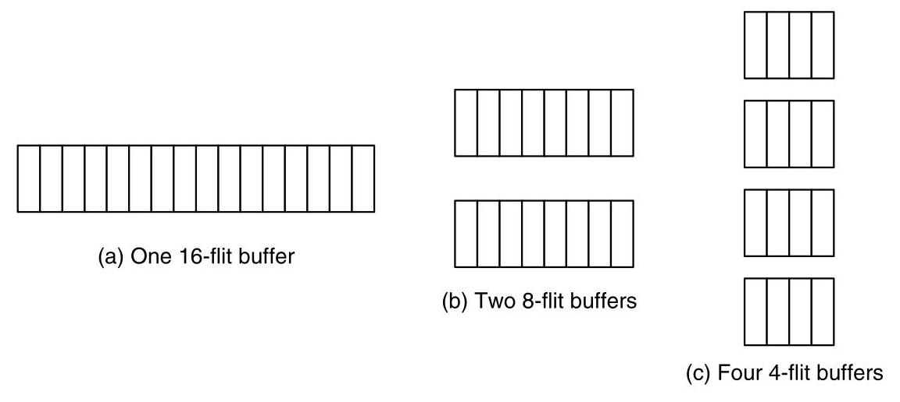
Figure 13.10 If 16 flits of buffer storage are available at an input port, the storage can be arranged as a single virtual channel with a 16-flit queue as 2 virtual channels with 8-flit queues or as 4 virtual channels with 4-flit queues.
图 13.10 如果一个输入端口有 16 个微片的缓冲存储可用，这些存储可以安排成一个具有 16 个微片队列的虚拟通道、两个各具有 8 个微片队列的虚拟通道，或者四个各具有 4 个微片队列的虚拟通道。
more detail in Chapter 23
详见第23章
13.3 Buffer Management and Backpressure
All of the flow control methods that use buffering need a means to communicate the availability of buffers at the downstream nodes. Then the upstream nodes can determine when a buffer is available to hold the next flit (or packet for store-and-forward or cut-through) to be transmitted. This type of buffer management provides backpressure by informing the upstream nodes when they must stop transmitting flits because all of the downstream flit buffers are full. Three types of low-level flow control mechanisms are in common use today to provide such backpressure: credit-based, on/off, and ack/nack. We examine each of these in turn.
所有使用缓冲的流控方法都需要一种机制来向下游节点传递缓冲区的可用性信息。这样上游节点就可以确定何时有缓冲区可用于保存下一个待传输的 flit（对于 store-and-forward 或 cut-through，则是数据包）。这种缓冲区管理通过告知上游节点何时因下游所有 flit 缓冲区已满而必须停止发送 flit 来提供 backpressure。目前，有三种常用的低级流控机制用于提供这种 backpressure：credit-based、on/off 和 ack/nack。我们将依次讨论它们。
13.3.1 Credit-Based Flow Control
With credit-based flow control, the upstream router keeps a count of the number of free flit buffers in each virtual channel downstream. Then, each time the upstream router forwards a flit, thus consuming a downstream buffer, it decrements the appropriate count. If the count reaches zero, all of the downstream buffers are full and no further flits can be forwarded until a buffer becomes available. Once the downstream router forwards a flit and frees the associated buffer, it sends a credit to the upstream router, causing a buffer count to be incremented.
在基于信用的流量控制中，上游路由器会记录下游每个虚拟通道中空闲微片缓冲区的数量。每当上游路由器转发一个微片，从而占用一个下游缓冲区时，就会将相应的计数值减一。如果计数值降至零，意味着下游所有缓冲区已满，无法继续转发更多微片，直到有缓冲区可用为止。一旦下游路由器转发了一个微片并释放了相应的缓冲区，就会向上游路由器发送一个信用，使缓冲区计数值加一。
A timeline illustrating credit-based flow control is shown in Figure 13.11. Just before time \({t}_{1}\) , all buffers on the downstream end of the channel (at node 2) are full. At time \({t}_{1}\) , node 2 sends a flit, freeing a buffer. A credit is sent to node 1 to signal that this buffer is available. The credit arrives at time \({t}_{2}\) , and after a short processing interval results in a flit being sent at time \({t}_{3}\) and received at time \({t}_{4}\) . After a short interval, this flit departs node 2 at time \({t}_{5}\) , again freeing a buffer and sending a credit back to node 1.
图13.11中给出了基于信用的流控制时间线示意图。就在时间 \({t}_{1}\) 之前，通道下游端（节点2）的所有缓冲区都是满的。在时间 \({t}_{1}\) ，节点2发送一个微片，从而释放一个缓冲区。一个信用被发往节点1以告知该缓冲区可用。该信用在时间 \({t}_{2}\) 到达，经过一段短暂的处理间隔后，在时间 \({t}_{3}\) 触发了一个微片的发送，并在时间 \({t}_{4}\) 被接收。经过短暂间隔后，该微片在时间 \({t}_{5}\) 离开节点2，再次释放一个缓冲区并向节点1发回一个信用。
The minimum time between the credit being sent at time \({t}_{1}\) and a credit being sent for the same buffer at time \({t}_{5}\) is the credit round-trip delay \({t}_{\text{ crt }}\) . This delay, which includes a round-trip wire delay and additional processing time at both ends, is a critical parameter of any router because it determines the maximum throughput that can be supported by the flow control mechanism. If there were only a single flit buffer on this virtual channel, each flit would have to wait for a credit for this single buffer before being transmitted. This would restrict the maximum throughput of the channel to be no more than one flit each \({t}_{\mathrm{{crt}}}\) . This corresponds to a bit rate of \(\frac{{L}_{f}}{{t}_{\mathrm{{crt}}}}\) , where \({L}_{f}\) is the length of a flit in bits. If there are \(F\) flit buffers on this virtual channel, \(F\) flits could be sent before waiting for the credit for the original buffer, giving a throughput of \(F\) flits per \({t}_{\text{ crt }}\) or \(\frac{F{L}_{f}}{{t}_{\text{ crt }}}\) bits per second. Thus, we see that to prevent low-level flow control from limiting throughput over a channel with bandwidth \(b\) , we require:
在时刻\({t}_{1}\)发送信用与在时刻\({t}_{5}\)为同一缓冲区发送信用之间的最小时间即为信用往返时延\({t}_{\text{ crt }}\)。该时延包含了往返线路延迟以及两端额外的处理时间，是任何路由器的关键参数，因为它决定了流量控制机制所能支持的最大吞吐量。如果该虚拟通道上只有一个微片缓冲区，那么每个微片在传输之前都必须等待该单一缓冲区的信用。这将限制该通道的最大吞吐量不超过每个\({t}_{\mathrm{{crt}}}\)一个微片。这对应于\(\frac{{L}_{f}}{{t}_{\mathrm{{crt}}}}\)的比特率，其中\({L}_{f}\)是微片的比特长度。如果该虚拟通道上有\(F\)个微片缓冲区，则可以在等待原始缓冲区的信用之前发送\(F\)个微片，从而得到每\({t}_{\text{ crt }}\) \(F\)个微片的吞吐量，即每秒\(\frac{F{L}_{f}}{{t}_{\text{ crt }}}\)比特。因此，我们看到，为了防止底层流量控制限制带宽为\(b\)的通道的吞吐量，我们需要：
\[ F \geq \frac{{t}_{\mathrm{{crt}}}b}{{L}_{f}}. \tag{13.1} \]
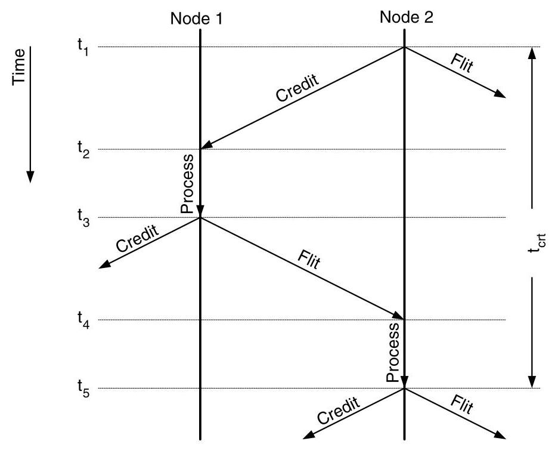
Figure 13.11 Timeline of credit-based flow control. At time \({t}_{1}\) all buffers at the node 2 end of the channel are full and node 2 sends a flit, freeing a buffer. At the same time, a credit for this buffer is sent to node 1 and is received at \({t}_{2}\) . After a short processing delay, node 1 sends a flit to occupy the buffer granted by the credit at \({t}_{3}\) , and this flit is received at \({t}_{4}\) . A short time after arrival, this flit departs node 2 at \({t}_{5}\) , freeing the buffer again and hence generating another credit for node 1. The minimum time between successive credits for the same buffer is the credit round-trip time \({t}_{\text{ crt }}\) .
图13.11 基于信用的流控时间线。在时刻 \({t}_{1}\)，通道节点2端的所有缓冲区均已满，此时节点2发送一个微片，从而释放一个缓冲区。与此同时，该缓冲区的信用被发送至节点1，并于 \({t}_{2}\) 时刻到达。经过短暂的处理延迟后，节点1在 \({t}_{3}\) 时刻发送一个微片以占用该信用所授予的缓冲区，该微片于 \({t}_{4}\) 时刻被接收。到达后不久，这个微片在 \({t}_{5}\) 时刻离开节点2，再次释放缓冲区，从而为节点1生成另一个信用。同一缓冲区连续两次信用之间的最短时间即为信用往返时间 \({t}_{\text{ crt }}\)。
Figure 13.12 illustrates the mechanics of credit-based flow control. The sequence begins in Figure 13.12(a). Upstream node 1 has two credits for the virtual channel shown on downstream node 2. In Figure 13.12(b) node 1 transmits the head flit and decrements its credit count to 1 . The head arrives at node 2 in Figure 13.12(c), and, at the same time, node 1 sends the first body flit of the packet, decrementing its credit count to zero. With no credits, node 1 can send no flits during Figure 13.12(d) when the body flit arrives and (e) when node 2 transmits the head flit. Transmitting the head flit frees a flit buffer, and node 2 sends a credit back to node 1 to grant it use of this free buffer. The arrival of this credit in Figure 13.12(f) increments the credit count on node 1 at the same time the body flit is transmitted upstream, and a second credit is transmitted downstream by node 2. With a non-zero credit count, node 1 is able to forward the tail flit and free the virtual channel by clearing the input virtual channel field (Figure 13.12[g]). The tail flit is forwarded by node 2 in Figure 13.12(h), returning a final credit that brings the count on node 1 back to 2 in Figure 13.12(i).
图13.12说明了基于信用的流控制机制。序列始于图13.12(a)。上游节点1对于下游节点2上显示的虚拟通道有两个信用。在图13.12(b)中，节点1发送头部微片，并将信用计数减少到1。头部微片到达节点2在图13.12(c)，同时，节点1发送该包的第一个体部微片，将信用计数减至零。没有信用，节点1在图13.12(d)中当体部微片到达时以及(e)中节点2发送头部微片时不能发送任何微片。发送头部微片释放了一个微片缓冲区，节点2向节点1发回一个信用，以授权其使用这个空闲缓冲区。该信用在图13.12(f)中的到达增加节点1的信用计数，同时体部微片在上游发送，并且节点2向下游发送第二个信用。由于信用计数非零，节点1能够转发尾部微片，并通过清除输入虚拟通道字段来释放虚拟通道（图13.12[g]）。尾部微片在图13.12(h)中被节点2转发，返回最后一个信用，使得节点1上的计数回到2，如图13.12(i)所示。
A potential drawback of credit-based flow control is a one-to-one correspondence between flits and credits. For each flit sent downstream, a corresponding credit is eventually sent upstream. This requires a significant amount of upstream signaling and, especially for small flits, can represent a large overhead.
基于信用的流控的一个潜在缺点是微片与信用之间的一一对应关系。对于向下游发送的每个微片，最终都需要向上游发送一个对应的信用。这需要大量的上游信令，尤其对于小尺寸微片，可能带来很大的开销。
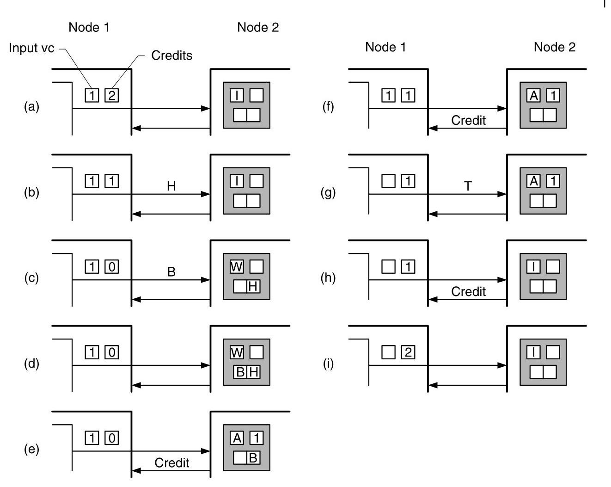
Figure 13.12 A sequence showing the operation of credit-based flow control. Each subfigure represents one flit time. In (a) node 1 has two credits for the two downstream flit buffers of the virtual channel on node 2. In (b) and (c) node 1 transmits two flits, a head and body, using both of these credits. These flits arrive in (c) and (d), respectively, and are buffered. At this point node 1 has no credits, making it unable to send additional flits. A credit for the head flit is returned in (e), incrementing the credit count in (f) and causing the tail flit to be transmitted in (g). The body credit is returned in (f) and the tail credit in (h), leaving node 1 in (i) again with two credits (corresponding to the two empty flit buffers on node 2).
图 13.12 展示基于信用的流控操作序列。每幅子图表示一个微片时间。在 (a) 中，节点 1 拥有两个信用，对应节点 2 上虚通道的两个下游微片缓冲区。在 (b) 和 (c) 中，节点 1 使用这两个信用发送了两个微片——一个头微片和一个体微片。这些微片分别在 (c) 和 (d) 中到达并被缓冲。此时节点 1 已无信用，无法再发送更多微片。头微片的信用在 (e) 中返回，在 (f) 中使信用计数增加，并导致尾微片在 (g) 中被发送。体微片的信用在 (f) 中返回，尾微片的信用在 (h) 中返回，使得节点 1 在 (i) 中再次拥有两个信用（对应节点 2 上两个空的微片缓冲区）。
13.3.2 On/Off Flow Control
On/off flow control can greatly reduce the amount of upstream signaling in certain cases. With this method the upstream state is a single control bit that represents whether the upstream node is permitted to send (on) or not (off). A signal is sent upstream only when it is necessary to change this state. An off signal is sent when the control bit is on and the number of free buffers falls below the threshold \({F}_{\text{ off }}\) . If the control bit is off and the number of free buffers rises above the threshold \({F}_{\text{ on }}\) , an on signal is sent.
开关流控在某些情况下可大幅减少上游信号量。采用这种方法时，上游状态是一个控制位，表示上游节点是否允许发送（开）或禁止发送（关）。仅当需要改变此状态时才向上游发送信号。当控制位为开，且空闲缓冲区数量低于阈值 \({F}_{\text{ off }}\) 时，发送关信号。如果控制位为关，且空闲缓冲区数量升至阈值 \({F}_{\text{ on }}\) 以上，则发送开信号。
A timeline illustrating on/off flow control is illustrated in Figure 13.13. At time to \({t}_{1}\) , node 1 sends a flit that causes the number of free buffers on node 2 to fall below \({F}_{\text{ off }}\) and thus triggers the transmission of an off signal at \({t}_{2}\) . At \({t}_{3}\) the off signal is received at node 1, and after a small processing delay, stops transmission of flits at \({t}_{4}\) . In the time \({t}_{rt}\) between \({t}_{1}\) and \({t}_{4}\) , additional flits are sent. The lower limit must be set so that
图13.13展示了开关式流量控制的时间线示意图。在时刻\({t}_{1}\)，节点1发送一个微片，导致节点2上的空闲缓冲区数量降至\({F}_{\text{off}}\)以下，从而触发在\({t}_{2}\)时刻发送关闭信号。在\({t}_{3}\)时刻，节点1接收到关闭信号，并在经过一段短暂的处理延迟后，于\({t}_{4}\)时刻停止发送微片。在从\({t}_{1}\)到\({t}_{4}\)的\({t}_{rt}\)时间范围内，会有额外的微片被发送。其下限必须被设定为使得
\[ {F}_{\text{ off }} \geq \frac{{t}_{rt}b}{{L}_{f}} \tag{13.2} \]
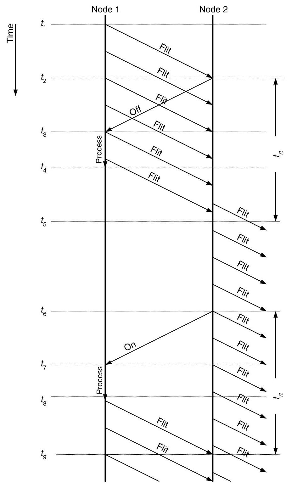
Figure 13.13 Timeline of on/off flow control. The flit transmitted at \({t}_{1}\) causes the free buffer count on node 2 to fall below its limit, \({F}_{off}\) , which in turn causes node 2 to send an off signal back to node 1 . Before receiving this signal, node 1 transmits additional flits that node 2 buffers in the \({F}_{off}\) buffers that were free when the off signal was transmitted. At \({t}_{6}\) the free buffer count on node 2 rises above \({F}_{On}\) , causing node 2 to send an on signal to node 1 . During the interval between sending this on signal at \({t}_{6}\) and the receipt of the next flit from node 1 at \({t}_{9}\) , node 2 sends flits out of the \(F - {F}_{0}\) buffers that were full at \({t}_{6}\) .
图 13.13 开关流量控制的时间线。在 \({t}_{1}\) 时刻发送的微片导致节点 2 上的空闲缓冲区计数降至其下限 \({F}_{off}\) 以下，这反过来使节点 2 向节点 1 发送一个关闭信号。在收到该信号之前，节点 1 继续发送额外的微片，这些微片被节点 2 缓存在发出关闭信号时空闲的 \({F}_{off}\) 个缓冲区中。在 \({t}_{6}\) 时刻，节点 2 上的空闲缓冲区计数回升至 \({F}_{On}\) 以上，导致节点 2 向节点 1 发送一个开启信号。在 \({t}_{6}\) 时刻发送此开启信号与 \({t}_{9}\) 时刻收到来自节点 1 的下一个微片之间这段时间内，节点 2 从 \({t}_{6}\) 时刻已满的 \(F - {F}_{0}\) 个缓冲区中向外发送微片。
to prevent these additional flits from overflowing the remaining flit buffers.
以防止这些额外的微片溢出剩余的微片缓冲区。
After sending a number of flits, node 2 clears sufficient buffers to bring the free buffer count above \({F}_{\text{ on }}\) at \({t}_{6}\) and sends an on signal to node 1 . Node 1 receives this signal at \({t}_{7}\) and resumes sending flits at \({t}_{8}\) . The first flit triggered by the on signal arrives at \({t}_{9}\) . To prevent node 2 from running out of flits to send between sending the on signal at \({t}_{6}\) and receiving a flit at \({t}_{9}\) , the on limit must be set so that
在发送了一定数量的微片后，节点 2 释放了足够的缓冲区，使空闲缓冲区计数在 \({t}_{6}\) 时刻超过 \({F}_{\text{ on }}\)，并向节点 1 发送“开启”信号。节点 1 在 \({t}_{7}\) 时刻收到该信号，并在 \({t}_{8}\) 时刻恢复发送微片。由该“开启”信号触发的第一个微片在 \({t}_{9}\) 时刻到达。为了防止节点 2 在 \({t}_{6}\) 时刻发送“开启”信号与 \({t}_{9}\) 时刻收到微片之间没有微片可发，必须将“开启”限制设置为
\[ F - {F}_{\text{ on }} \geq \frac{{t}_{rt}b}{{L}_{f}}. \tag{13.3} \]
On/off flow control requires that the number of buffers be at least \(\frac{{t}_{rt}b}{{L}_{f}}\) to work at all or Equation 13.2 cannot be satisfied. To operate at full speed, twice this number of buffers is required so that Equation 13.3 can also be satisfied \(\left( {{F}_{\text{ on }} \geq {F}_{\text{ off }}}\right)\) :
开/关流控制要求缓冲区数量至少为 \(\frac{{t}_{rt}b}{{L}_{f}}\) 才能正常工作，否则无法满足公式 13.2。要以全速运行，则需要两倍于此的缓冲区数量，以便同时满足公式 13.3 \(\left( {{F}_{\text{ on }} \geq {F}_{\text{ off }}}\right)\)：
\[ F \geq {F}_{\text{ on }} + \frac{{t}_{rt}b}{{L}_{f}} \geq {F}_{\text{ off }} + \frac{{t}_{rt}b}{{L}_{f}} \geq \frac{2{t}_{rt}b}{{L}_{f}}. \]
With an adequate number of buffers, on/off flow control systems can operate with very little upstream signaling.
如果缓冲区数量充足，开/关流量控制系统可以在极少的上游信号下运行。
13.3.3 Ack/Nack Flow Control
Both credit-based and on/off flow control require a round-trip delay \({t}_{rt}\) between the time a buffer becomes empty, triggering a credit or an on signal, and when a flit arrives to occupy that buffer. Ack/nack flow control reduces the minimum of this buffer vacancy time to zero and the average vacancy time to \({t}_{rt}/2\) . Unfortunately there is no net gain because buffers are held for an additional \({t}_{rt}\) waiting for an acknowledgment, making ack/nack flow control less efficient in its use of buffers than credit-based flow control. It is also inefficient in its use of bandwidth which it uses to send flits only to drop them when no buffer is available.
基于信用的流控和开关式流控都需要一个往返延迟 \({t}_{rt}\)，即从缓冲区变为空、触发信用或开启信号，到微片到达并占据该缓冲区之间的时间。确认/否认流控将这一缓冲区空闲时间的最小值降至零，并将平均空闲时间降至 \({t}_{rt}/2\)。遗憾的是，这并未带来净收益，因为缓冲区需要额外等待 \({t}_{rt}\) 的时间以接收确认，使得确认/否认流控在缓冲区利用效率上低于基于信用的流控。它在带宽使用上也是低效的，因为它发送微片，却仅在无可用缓冲区时将其丢弃。
With ack/nack flow control, there is no state kept in the upstream node to indicate buffer availability. The upstream node optimistically sends flits whenever they become available. \({}^{9}\) If the downstream node has a buffer available, it accepts the flit and sends an acknowledge (ack) to the upstream node. If no buffers are available when the flit arrives, the downstream node drops the flit and sends a negative acknowledgment (nack). The upstream node holds onto each flit until it receives an ack. If it receives a nack, it retransmits the flit.
采用 ack/nack 流控时，上游节点不保留指示缓冲区可用性的状态。一旦有微片可用，上游节点即乐观地发送它们。\({}^{9}\) 如果下游节点有可用缓冲区，则接受该微片，并向上游节点发送确认信号（ack）。如果微片到达时没有可用缓冲区，下游节点则丢弃该微片，并发送否定确认信号（nack）。上游节点会一直持有每个微片，直到收到 ack 为止。如果收到 nack，则重传该微片。
In systems where multiple flits may be in flight at the same time, the correspondence between acks or nacks and flits is maintained by ordering - acks and nacks are received in the same order as the flits to which they correspond. In such systems, however, nacking a flit leads to flits being received out of order at the downstream node. The downstream node must then reorder the flits by holding the later flits until the earlier flits are successfully retransmitted.
在允许多个微片（flit）同时传输的系统中，确认（ack）和否定确认（nack）与微片之间的对应关系通过顺序来维持——确认和否定确认的接收顺序与它们所对应的微片顺序一致。然而，在这样的系统中，对一个微片发送否定确认会导致下游节点收到的微片失序。下游节点随后必须对微片重新排序，具体做法是暂存后到达的微片，直到先前的微片成功重传。
The timeline of Figure 13.14 illustrates ack/nack flow control. At time \({t}_{1}\) , node 1 sends flit 1 to node 2, not knowing that no buffers are available. This flit arrives at time \({t}_{2}\) , at which time node 2 sends a nack back to node 1. At the same time, node 1 begins sending flit 2 to node 2. At time \({t}_{3}\) , node 1 receives the nack, but before it can be processed starts sending flit 3 to node 2. It has to wait until the transmission of flit 3 is completed, at \({t}_{4}\) , to retransmit flit 1 . Flit 1 is finally received at \({t}_{5}\) after flits 2 and 3. Node 2 must buffer flits 2 and 3 until flit 1 is received to avoid transmitting the flits out of order.
图 13.14 的时间线展示了 ack/nack 流控机制。在时间 \({t}_{1}\)，节点 1 在不知道没有可用缓冲区的情况下向节点 2 发送微片 1。该微片在时间 \({t}_{2}\) 到达，此时节点 2 向节点 1 发回一个 nack。与此同时，节点 1 开始向节点 2 发送微片 2。在时间 \({t}_{3}\)，节点 1 收到 nack，但在尚未处理之前就已开始向节点 2 发送微片 3。它必须等到微片 3 的传输在 \({t}_{4}\) 完成后，才能重传微片 1。微片 1 最终在 \({t}_{5}\) 于微片 2 和 3 之后被接收。节点 2 必须先缓存微片 2 和 3，直到收到微片 1，以避免微片乱序发送。
Because of its buffer and bandwidth inefficiency, ack/nack flow control is rarely used. Rather, credit-based flow control is typically used in systems with small numbers of buffers, and on/off flow control is employed in most systems that have large numbers of flit buffers.
由于其缓冲区和带宽效率低下，确认/非确认流控很少被使用。相反，基于信用的流控通常用于缓冲区数量较少的系统，而开/关流控则用于大多数拥有大量微片缓冲区的系统。
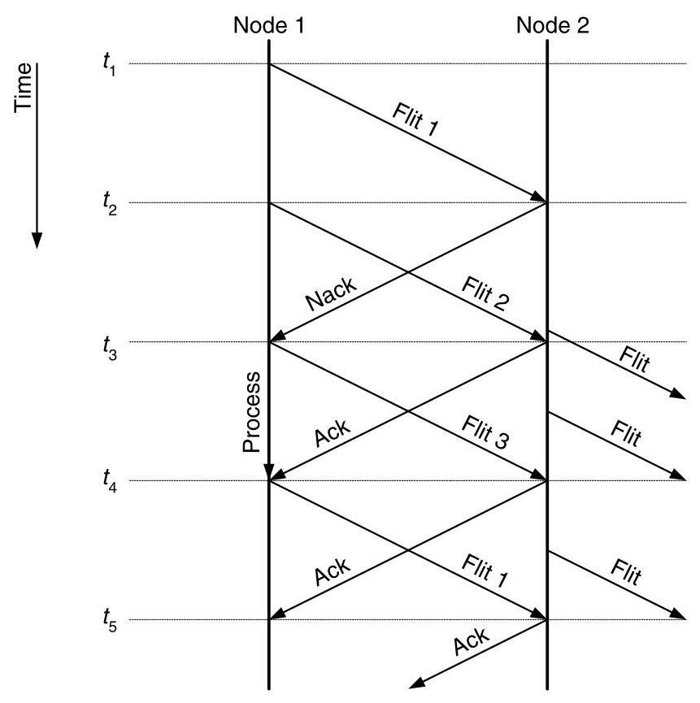
Figure 13.14 Timeline of ack/nack flow control. Flit 1 is not accepted by node 2, which returns a nack to sending node 1. Node 2 then accepts flits 2 and 3 from node 1 and responds to each by sending an ack to node 1. After flit 3 has been completed, node 1 responds to the nack by retransmitting flit 1. Node 2 cannot send flits 2 or 3 onward until flit 1 is received. It must transmit flits in order.
图13.14展示了确认/否认（ack/nack）流控的时间线。节点2未接受微片1，因此向发送节点1返回一个否认（nack）。随后，节点2接受来自节点1的微片2和3，并分别向节点1发送确认（ack）作为响应。微片3传输完成后，节点1对收到的否认作出响应，重传微片1。在收到微片1之前，节点2无法将微片2或3继续向前转发。它必须按顺序发送微片。
13.4 Flit-Reservation Flow Control
While traditional wormhole networks greatly reduce the latency of sending packets through an interconnection network, the idealized view of router behavior can differ significantly from a pipelined hardware implementation. Pipelining breaks the stages of flit routing into several smaller steps, which increases the hop time. Accounting for these pipelining delays and propagation latencies gives an accurate view of buffer utilization.
虽然传统的虫洞网络大幅降低了通过互连网络发送数据包的延迟，但路由器行为的理想化视图可能与流水线硬件实现存在显著差异。流水线技术将微片路由的各个阶段分解为若干更小的步骤，从而增加了每跳时间。计及这些流水线延迟和传播延迟，才能准确反映缓冲区的利用情况。
An example of buffer utilization for a wormhole network with credit-based flow control is shown in Figure 13.15. Initially, a flit is sent from the current node to the next node in a packet's route. The flit occupies the buffer until it is forwarded to its next hop; then a credit is sent along the reverse channel to the current node, which takes a wire propagation time \({T}_{\mathrm{w},\text{ credit }}\) . The credit is processed by the current node, experiencing a credit pipeline delay, and is then ready for use by another flit. Once this flit receives the credit, it must traverse the flit pipeline before accessing the channel. Finally, the flit propagates across the channel in \({T}_{\mathrm{w},\text{ data }}\) and occupies the buffer. As shown in the figure, the actual buffer usage represents a small fraction of the overall time. The remaining time required to recycle the credit and issue another flit to occupy the buffer is called the turnaround time. Lower buffer utilization reduces network throughput because fewer buffers are available for bypassing blocked messages and absorbing traffic variations. Flit-reservation flow control can reduce turnaround time to zero and hide the flit pipeline delay in a practical implementation.
图13.15展示了一个采用基于信用流控的虫孔网络中缓冲区利用情况的例子。初始时，一个微片从当前节点发往数据包路由中的下一节点。该微片占用缓冲区，直到被转发至下一跳；然后，一个信用沿反向信道发回当前节点，这需要一段线路传播时间\({T}_{\mathrm{w},\text{ credit }}\)。该信用由当前节点处理，经历一段信用流水线延迟，随后即可供另一个微片使用。一旦这个微片获得信用，它必须穿越微片流水线才能访问信道。最后，微片在\({T}_{\mathrm{w},\text{ data }}\)时间内穿越信道，并占用缓冲区。如图所示，实际的缓冲区使用时间仅占总时间的一小部分。回收信用并发出另一个微片占用缓冲区所需的剩余时间称为周转时间。较低的缓冲区利用率会降低网络吞吐量，因为可用于绕过被阻塞消息和吸收流量波动的缓冲区更少了。微片预留流控可将周转时间降至零，并在实际实现中隐藏微片流水线延迟。
Flit-reservation hides the overhead associated with a pipelined router implementation by separating the control and data networks. Control flits race ahead of the data flits to reserve network resources. As the data flits arrive, they have already been allocated an outgoing virtual channel and can proceed with little overhead. Reservation also streamlines the delivery of credits, allowing zero turnaround time for buffers. Of course, it is not always possible to reserve resources in advance, especially in the case of heavy congestion. In these situations, data flits simply wait at the router until resources have been reserved - the same behavior of a standard wormhole router.
微片预留通过分离控制网络与数据网络，隐藏了流水线路由器实现中的相关开销。控制微片抢先于数据微片运行，以预留网络资源。当数据微片到达时，它们已经分配到了一个出站的虚拟通道，并能以极小的开销继续前进。预留机制还简化了信用量/信用值的传递，使得缓冲区能够实现零周转时间。当然，提前预留资源并非总是可行，特别是在严重拥塞的情况下。在这些情形中，数据微片只是在路由器处等待，直到资源被预留——这与标准虫洞路由器的行为相同。
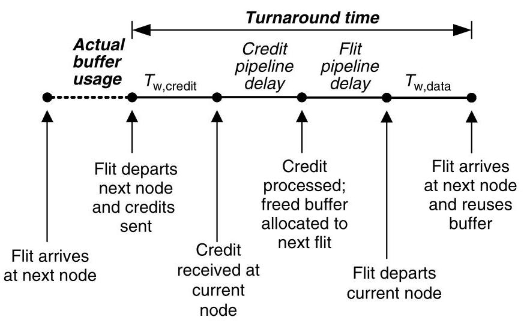
Figure 13.15 An illustration of realistic delays on buffer utilization in a typical wormhole router. As the buffer turnaround time increases, the fraction of time a buffer is actually in use decreases.
图13.15 典型虫孔路由器中实际延迟对缓冲区利用率影响的示意图。随着缓冲区周转时间的增加，缓冲区实际使用的时间比例随之下降。
A flit-reservation packet is shown in Figure 13.16. As shown, the control portion of the flit is separated from the data portion. The control head flit holds the same information as a typical virtual channel flow control head flit: a type field (control head), a virtual channel, and routing information. An additional field \({t}_{\mathrm{d}0}\) shows the time offset to the first data flit. This data offset couples control flits to their associated data flits. So, for example, when a control flit arrives at a node at time \(t = 3\) with \({t}_{\mathrm{d}0} = 2\) , the router knows that the associated data flit will be arriving on the data network at time \(t = 3 + {t}_{\mathrm{d}0} = 5\) . By knowing the future arrival time of the data, the router can start reserving resources to the data before its actual arrival. Since the router knows when a particular data flit is arriving, no control fields are required in the data flits themselves.
图13.16展示了一个微片预留分组。如图所示，微片的控制部分与数据部分相分离。控制头微片包含与典型虚通道流控头微片相同的信息：一个类型字段（控制头）、一个虚通道以及路由信息。一个额外的字段 \({t}_{\mathrm{d}0}\) 指示到第一个数据微片的时间偏移量。该数据偏移量将控制微片与其关联的数据微片耦合起来。因此，例如，当一个控制微片在时间 \(t = 3\) 到达一个节点，且 \({t}_{\mathrm{d}0} = 2\) 时，路由器便知道关联的数据微片将在时间 \(t = 3 + {t}_{\mathrm{d}0} = 5\) 到达数据网络。通过知晓数据的将来到达时间，路由器可以在数据实际到达之前就开始为其预留资源。由于路由器知道特定数据微片何时到达，数据微片自身便无需任何控制字段。
Since packets can contain an arbitrary number of data flits and the control head flit has only a limited number of data offset fields (one, in this case), additional control body flits can follow the head flit. The control body flits are analogous to body flits in a typical wormhole router, and they contain additional data offset fields. In Figure 13.16, for example, the control body flits have two additional data offset fields, allowing two data flits per control body flit.
由于数据包可包含任意数量的数据 flit，而控制头 flit 仅有有限的数据偏移字段（本例中为一个），因此可以在头 flit 之后跟随额外的控制体 flit。控制体 flit 类似于典型虫洞路由器中的体 flit，并包含额外的数据偏移字段。例如，在图 13.16 中，控制体 flit 具有两个额外的数据偏移字段，从而每个控制体 flit 可携带两个数据 flit。
13.4.1 A Flit-Reservation Router
A flit-reservation router is shown in Figure 13.17. Before we describe the detailed operation of the modules in the router, the basic operation of the router is discussed. Control flits arrive in the router and are immediately passed to the routing logic. When a control head flit arrives at the routing logic, its output virtual channel (next hop) is computed and associated with the incoming virtual channel. As subsequent control body flits arrive for that virtual channel, they are marked with the same output channel as the control head flit. All control flits then proceed through a switch to their output port. Up to this point, control flits are processed identically to flits in a standard virtual channel router.
图13.17展示了一个微片预留路由器。在描述该路由器中各个模块的详细操作之前，首先讨论其基本工作过程。控制微片到达路由器后，会被立即传递至路由逻辑。当一个控制头微片到达路由逻辑时，其输出虚通道（下一跳）被计算出来，并与相应的输入虚通道关联。随后到达该虚通道的控制体微片，则被标记为与控制头微片相同的输出通道。之后，所有控制微片都通过交叉开关传输至其输出端口。至此，控制微片的处理方式与标准虚通道路由器中的微片处理完全一致。
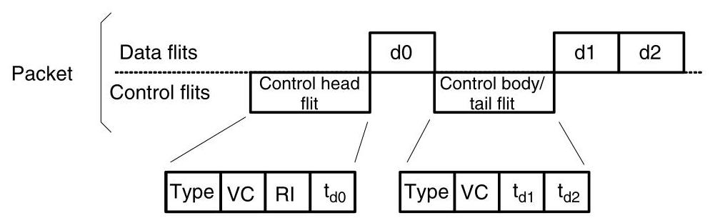
Figure 13.16 A flit-reservation packet showing the separation between control flits and data flit. Control flits are associated with particular data flits by an offset in their arrival times (e.g., for a control head flit arriving a time \(t\) , its associated data flit d0 arrives at time \(t + {t}_{\mathrm{d}0}\) ).
图 13.16 一个微片预留分组，展示了控制微片与数据微片之间的分离。控制微片通过它们到达时间的偏移量与特定数据微片相关联（例如，对于一个在时间 \(t\) 到达的控制头微片，其关联的数据微片 d0 在时间 \(t + {t}_{\mathrm{d}0}\) 到达）。
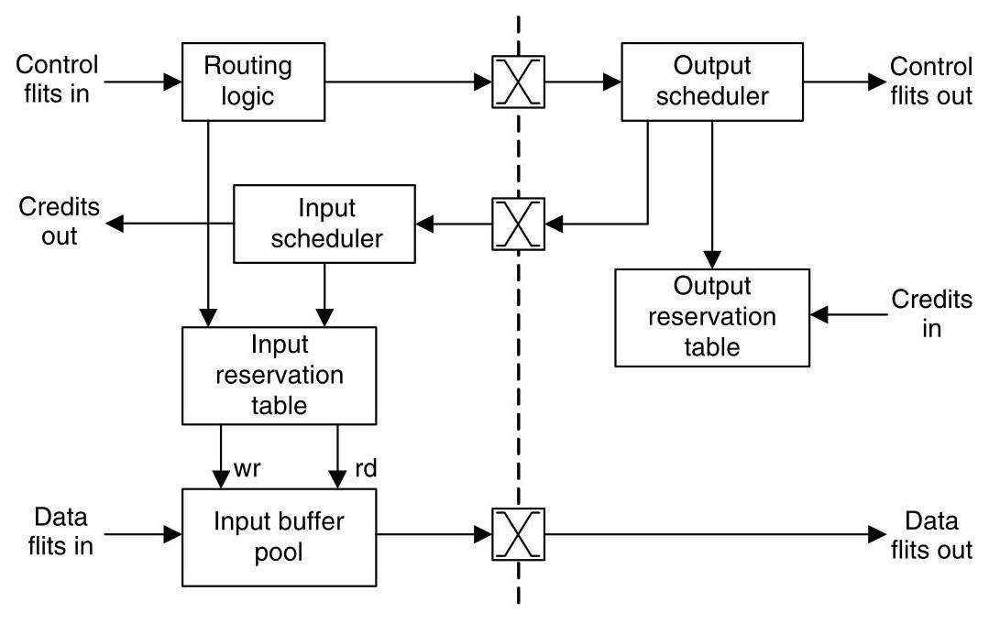
Figure 13.17 A flit-reservation flow control architecture. Only a single input and single output are shown for simplicity (per input and per output structures separated by the dashed line).
图 13.17 一种微片预留流控架构。为简单起见，仅展示单个输入和单个输出（虚线将每输入和每输出结构分隔开）。
After a control flit reaches its output port, it passes through the output scheduler before being forwarded to its next hop. The output scheduler is responsible for reserving buffer space at the next hop for each of a control flit's associated data flits, which are given by the data offset fields. A schedule of the next router's buffer usage is kept in the output reservation table, which is continually updated by incoming credits. Once the output scheduler has allocated all of a control flit's associated data flits and marked those reservations in the output reservation table, the control flit is forwarded to its next hop.
控制微片到达输出端口后，会先经过输出调度器，然后才被转发至下一跳。输出调度器负责为每个控制微片所关联的数据微片（由数据偏移字段指定）在下一跳预留缓冲区空间。下一跳路由器的缓冲区使用调度表维护在输出预留表中，并随着到达的信用值不断更新。一旦输出调度器完成了所有关联数据微片的分配，并在输出预留表中标记这些预留，该控制微片即被转发至下一跳。
The input reservation table provides the connection between control flits and their data flits within the router. As a control flit passes through the routing logic, its destination is also marked in the input reservation table. Additionally, each of the data offset fields of the control flit is marked in this table. Once a flit has been scheduled for departure by the output scheduler, this information is passed back to the input scheduler associated with the input the flit arrived on. This allows the input scheduler to know on which cycles flits have been scheduled to depart, indicating when their buffers will become free.
输入预留表在路由器内部提供了控制微片与其数据微片之间的连接。当控制微片通过路由逻辑时，其目的地址也被标记在输入预留表中。此外，控制微片的各个数据偏移字段同样被记录在该表中。一旦某个微片被输出调度器安排发送，该信息就会传回与该微片到达输入相关联的输入调度器。这使得输入调度器能够知晓微片被安排在哪些周期离开，从而表明其缓冲区将在何时变为空闲。
13.4.2 Output Scheduling
The output scheduler is responsible for determining the future departure time of each data flit associated with each control flit. For a data flit to depart, the physical output channel must be reserved and the output scheduler must also ensure that there will be sufficient buffer space in the next router to store the data flit. To track the future output channel utilization and availability of buffers at the next hop, the output scheduler maintains the output reservation table (Figure 13.18). This table maintains both channel usage and buffer availability counts for a number of cycles in the future.
输出调度器负责确定与每个控制微片相关联的每个数据微片的未来离开时间。数据微片若要离开，必须预留物理输出通道，输出调度器还必须确保下一路由器中有足够的缓冲空间来存储该数据微片。为了跟踪未来的输出通道利用率以及下一跳缓冲区的可用性，输出调度器维护输出预留表（图13.18）。该表维护了未来若干周期内的通道使用情况和缓冲区可用性计数。
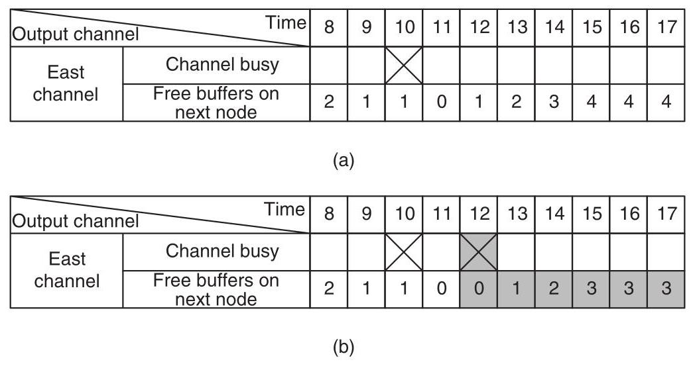
Figure 13.18 The output reservation table. (a) Example state. (b) Updated state of the table after scheduling a new data flit arriving on cycle 9. Cycle 12 is the first available departure time, since the channel is busy on cycle 10 and no buffers are free on cycle 11.
图13.18 输出预约表。(a) 示例状态。(b) 调度一个在第9周期到达的新数据微片后表的更新状态。第12周期是第一个可用的离开时间，因为通道在第10周期忙，并且在第11周期没有空闲缓冲区。
An example state of the output reservation table is shown in Figure 13.18(a). A new control flit arrives at time \(t = 0\) and the arrival time of its data flit(s) are determined. In this example, a single new data flit is indicated with \({t}_{\mathrm{d}0} = {9.}^{10}\) Therefore, the data flit will arrive at cycle \(t + {t}_{\mathrm{d}0} = 9\) destined to the east output. This information is forwarded to the output scheduler and the input reservation table. (The input reservation table is discussed in the next section.)
图13.18(a)展示了输出预约表的一个示例状态。在时刻\(t = 0\)，一个新的控制微片到达，并确定了其数据微片的到达时间。在此例中，一个单独的新数据微片被标注为\({t}_{\mathrm{d}0} = {9.}^{10}\)，因此该数据微片将在周期\(t + {t}_{\mathrm{d}0} = 9\)到达，目的地为东向输出。该信息被转发至输出调度器和输入预约表。（输入预约表将在下一节讨论。）
The output scheduler attempts to find an available departure time for the new data flit. Cycle 10 is unavailable because the output channel is already marked as busy. Cycle 11 is also unusable, but in this case, it is because there will be no free buffers on the next hop. The first available cycle is 12, so the output scheduler updates the output reservation table to indicate the channel as busy during cycle 12 (Figure 13.18[b]). Also, the flit occupies a buffer at the next node, so the number of free buffers is decremented from cycle 12 onwards. \({}^{11}\) This buffer will eventually be added back to output reservation table count once the credit from the next router returns, which is also discussed in the next section.
输出调度器尝试为新数据微片寻找可用的发送时间。第10个周期不可用，因为输出通道已被标记为忙。第11个周期也无法使用，但这次是因为下一跳将没有空闲缓冲区。第一个可用的周期是12，因此输出调度器更新输出预约表，将通道标记为在第12个周期期间忙（图13.18[b]）。同时，该微片占用下一节点的一个缓冲区，因此从第12个周期起，空闲缓冲区数量递减。\({}^{11}\) 当来自下一路由器的信用值返回后，这个缓冲区最终会被加回输出预约表的计数中，相关内容也将在下一节讨论。
- For simplicity, we consider the wire propagation times to be zero in this example.
- 为简化起见，在本例中我们将导线传播时间视为零。
- Since the output scheduler does not know the departure time of the flit from the next router's buffer, the buffer is initially assumed to be occupied until further notice. For this same reason, the data flit in the example could not depart on cycle 10 even if the output channel was free because there must be a free buffer for every time step after that point.
由于输出调度器不知道微片从下一路由器缓冲区的离开时间，该缓冲区最初被假定为占用，直到另有通知。同理，示例中的数据微片即使输出通道空闲，也无法在第10个周期离开，因为在那之后的每个时间步都必须有一个空闲缓冲区。
Now that the output reservation is complete, the reservation information is passed to an input scheduler. Once all the data flits associated with a control flit are reserved, the control flit is forwarded to the next hop. However, the relative time of its data flits may have changed in the output scheduling process, so its data offset field(s) must be updated. If the control flit in our example departs the router and then arrives at the next router at \(t = 2\) , then its \({t}_{\mathrm{d}0}\) field is changed to 10 . This is because the data flit has been delayed an additional cycle relative to the control flit by the output scheduler and its departure time is cycle 12 - therefore, \({t}_{\mathrm{d}0} = {12} - 2 = {10}\) .
现在输出预留已完成，预留信息被传递给输入调度器。一旦与控制微片关联的所有数据微片都被预留，控制微片就被转发到下一跳。然而，在输出调度过程中，其数据微片的相对时间可能已经改变，因此必须更新其数据偏移字段。如果示例中的控制微片离开了路由器，然后在 \(t = 2\) 时到达下一个路由器，则其 \({t}_{\mathrm{d}0}\) 字段被改为 10。这是因为数据微片被输出调度器相对于控制微片延迟了一个额外的周期，其离开时间为周期 12——因此，\({t}_{\mathrm{d}0} = {12} - 2 = {10}\)。
13.4.3 Input Scheduling
The input scheduler and the input reservation table organize the movement of data flits through the flit-reservation router. By accessing the data offset fields of incoming control flits, the routing logic marks arrival times of data flits and their destination port in the input reservation table (Figure 13.19). Once the data flit has been reserved an output time by the output scheduler, this reservation information is passed back to the input scheduler. The input scheduler updates the input reservation table with the departure time and output port of the corresponding data flit. Also, the input scheduler sends a credit to the previous router to indicate when the data flit's buffer is available again.
输入调度器与输入预约表协同管理数据微片在微片预约路由器中的传输。通过读取输入控制微片的数据偏移字段，路由逻辑在输入预约表中标记数据微片的到达时间及其目的端口（图13.19）。一旦输出调度器为该数据微片预约了输出时间，此预约信息便回传至输入调度器。输入调度器随后以对应数据微片的离开时间和输出端口更新输入预约表。同时，输入调度器向上游路由器发送信用，指示该数据微片的缓冲区何时重新可用。
Continuing the example from the previous section, when the arrival time of the new data flit (cycle 9) is decoded in the routing logic, this information is passed to the input reservation table (Figure 13.19). The data flit arriving during cycle 9 is latched at the beginning of cycle 10, so the arrival is marked in the table along with its output channel. The remaining entries of the table remain undetermined at this point.
延续前一节的示例，当新数据 flit 的到达时间（周期 9）在路由逻辑中被解码时，此信息被传递到输入预约表（图 13.19）。在周期 9 期间到达的数据 flit 在周期 10 开始时被锁存，因此该到达与其输出通道一起在表中被标记。此时，表中其余条目仍处于未确定状态。
When the reservation information for the new data flit returns from the output scheduler, the departure time of the flit is stored in the input reservation table. At this time, a credit is sent to the previous node, indicating this departure on cycle 12. Although flit reservation guarantees the arriving data flit can be buffered, the actual buffer location is not allocated until one cycle before the data flit arrives. After allocation, the buffer in and buffer out fields in the table are written.
当新数据微片的预约信息从输出调度器返回时，该微片的离开时间被存入输入预约表中。此时，会向前一个节点发送一个信用，指示在第12个周期进行此次离开。尽管微片预约能保证到达的数据微片可被缓冲，但实际的缓冲区位置直到数据微片到达前一个周期才分配。分配完成后，表中的 buffer in 和 buffer out 字段即被写入。
| Time Input channel | 8 | 9 | 10 | 11 | 12 | 13 | 14 | 15 | 16 | 17 | |
| West channel | Flit arriving? | ✘ | |||||||||
| Buffer in | 5 | ||||||||||
| Departure time | +2 | ||||||||||
| Buffer out | 5 | ||||||||||
| Output channel | E | ||||||||||
Figure 13.19 The input reservation table. A flit arrives from the west channel and is stored in buffer 5 of the input buffer pool in cycle 10. Two cycles later, the flit departs on the east channel of the router.
图 13.19 输入预约表。一个微片在第 10 周期从西向通道到达，并被存入输入缓冲池的 5 号缓冲区。两个周期后，该微片从路由器的东向通道离开。
13.5 Bibliographic Notes
Cut-through flow control was introduced by Kermani and Kleinrock [94]. Cut-through is an attractive solution for networks with small packets and has been used in recent networks such as the Alpha 21364 [131]. Dally and Seitz introduced wormhole flow control, which was first implemented on the Torus Routing Chip [56]. These ideas were further refined by Dally, who also introduced virtual-channel flow control [44, 47]. Both wormhole and virtual-channel flow control have appeared in numerous networks - the Cray T3D [95] and T3E [162], the SGI Spider [69], and the IBM SP networks [178, 176], for example. Flit-reservation flow control was developed by Peh and Dally [145].
直通流控由 Kermani 和 Kleinrock 提出 [94]。对于小数据包网络而言，直通是一种颇具吸引力的解决方案，并已在 Alpha 21364 [131] 等近期网络中得以应用。Dally 和 Seitz 引入了虫洞流控，该技术在 Torus 路由芯片上首次实现 [56]。这些思想由 Dally 进一步提炼，他同时还提出了虚通道流控 [44, 47]。虫洞流控和虚通道流控均已在众多网络中出现——例如 Cray T3D [95] 与 T3E [162]、SGI Spider [69] 以及 IBM SP 网络 [178, 176]。微片预留流控则由 Peh 和 Dally 提出 [145]。
13.6 Exercises
13.1 Packet-buffer, flit-channel flow control. Consider a flow control method that allocates buffers to packets, like cut-through flow control, but allocates channel bandwidth to flits, like virtual-channel flow control. What are the advantages and disadvantages of this approach? Construct an example and draw a time-space diagram for a case in which this flow control scheme gives a different ordering of events than pure cut-through flow control.
13.1 分组缓冲、微片通道的流控制。考虑这样一种流控制方法：如直通流控制那样为分组分配缓冲区，但如虚通道流控制那样为微片分配通道带宽。这种方法有何优缺点？请构造一个例子，并画出时空图，展示这种流控制方案下事件顺序与纯直通流控制不同的情形。
13.2 Overhead of credit-based flow control. Compute the overhead of credit-based flow control as a fraction of the packet length \(L\) . Assume a flit size of \({L}_{f}\) and \(V\) virtual channels.
13.2 基于信用的流量控制的开销。计算基于信用的流量控制的开销，将其表示为数据包长度\(L\)的一部分。假设微片大小为\({L}_{f}\)，并设有\(V\)个虚拟通道。
13.3 Flow control for a shared buffer pool. Consider a router where the flit buffers are shared between all the inputs of the switch. That is, at any point in time, flits stored at each input may occupy a portion of this shared buffer. To ensure fairness, some fraction of this shared buffer is statically assigned to particular inputs, but the remaining fraction is partitioned dynamically. Describe a buffer management technique to communicate the state of this buffer to upstream nodes. Does the introduction of a shared buffer increase the signaling overhead?
13.3 共享缓冲池的流控制。考虑一个路由器，其微片缓冲区在交换机的所有输入之间共享。也就是说，在任何时刻，每个输入处所存储的微片都可能占用该共享缓冲区的一部分。为保证公平，该共享缓冲区的某些部分会静态分配给特定输入，而剩余部分则进行动态划分。请描述一种缓冲管理技术，用以将这一缓冲区的状态传达给上游节点。引入共享缓冲区是否会增加信令开销？
13.4 A single-ported input buffer pool. Consider a flit-reservation router whose input buffer pool is single-ported (one read or write per cycle). Describe how to modify the router described in Section 13.4 and what additional state, if any, is required in the router.
13.4 一个单端口输入缓冲池。考虑一个微片预留路由器，其输入缓冲池是单端口的（每个周期一次读取或写入）。描述如何修改13.4节所述的路由器，以及路由器中需要哪些额外状态（如果有的话）。
13.5 Synchronization issues in flit-reservation. The flit data in a flit-reservation router is indentified only by its arrival relative to its control information. However, in a ple-siochronous system, the clocks between routers may occasionally "slip," causing the insertion of an extra cycle of transmission delay. If ignored, these extra cycles would change what data was associated with a particular control flit. Suggest a simple way to solve this problem.
13.5 微片预留中的同步问题。微片预留路由器中的微片数据仅通过其到达时间与控制信息的相对关系来识别。然而，在准同步系统中，路由器之间的时钟可能偶尔“滑移”，导致插入额外的传输延迟周期。如果忽略这些额外周期，就会改变特定控制微片所关联的数据。请提出一种解决此问题的简单方法。